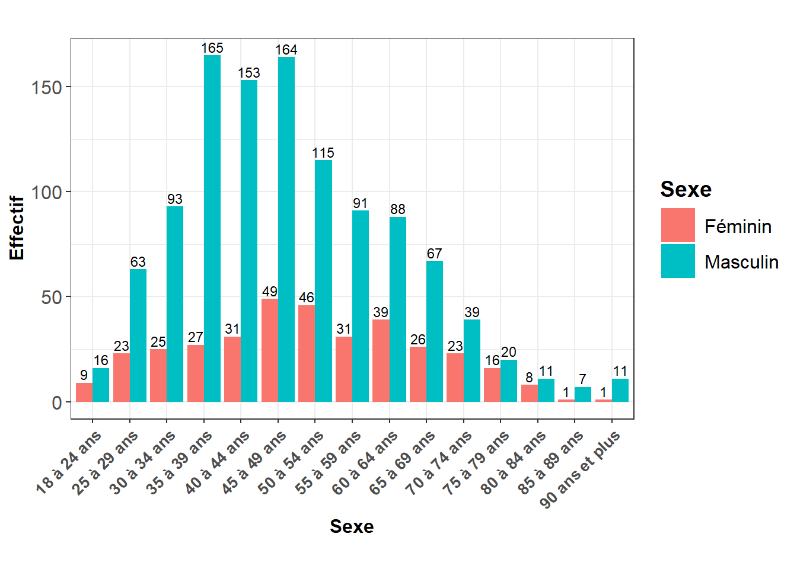
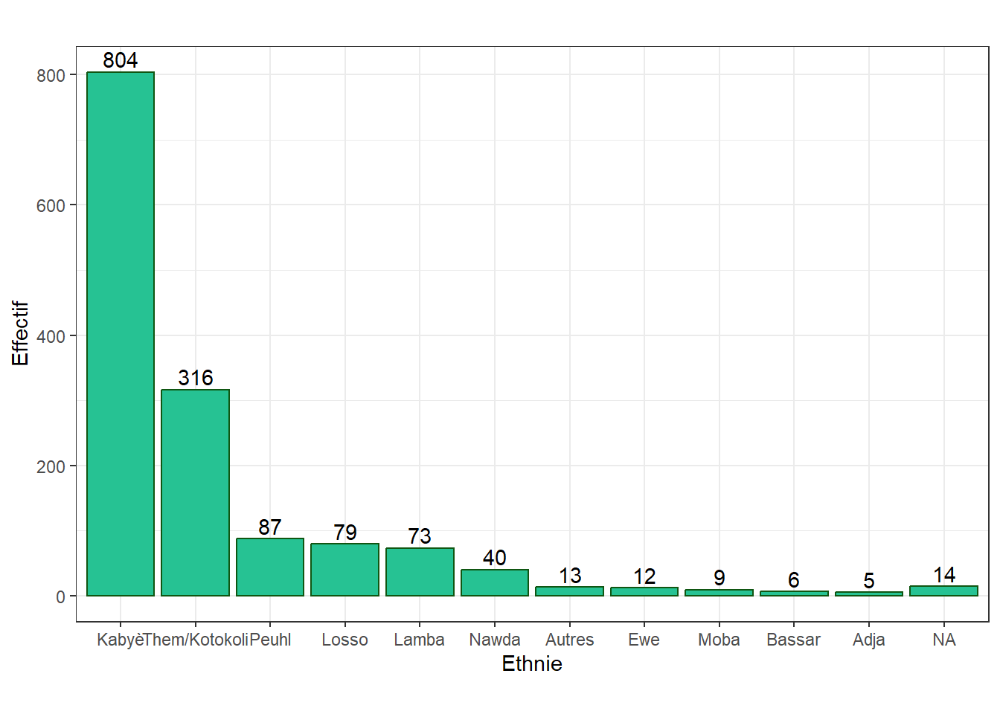
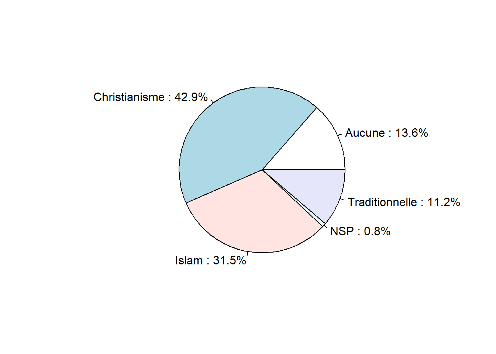
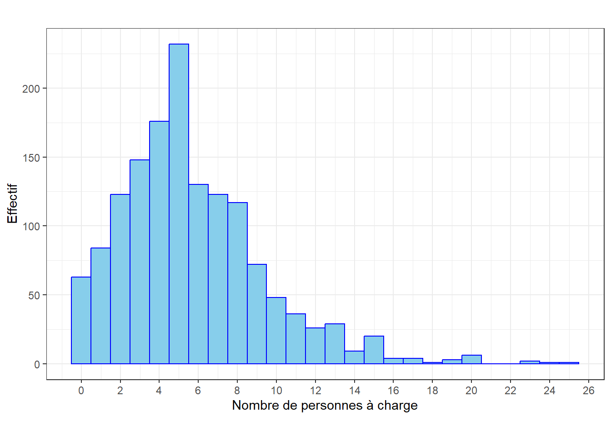
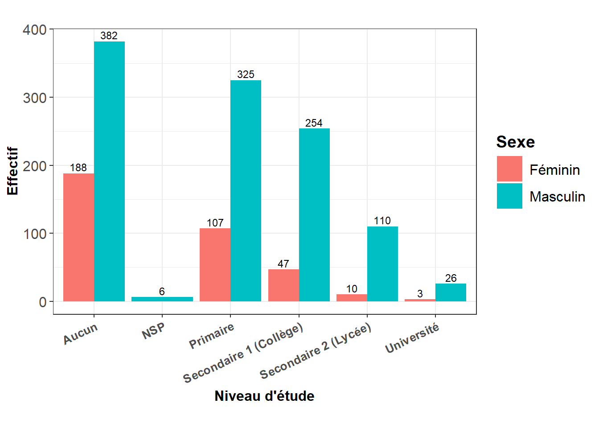
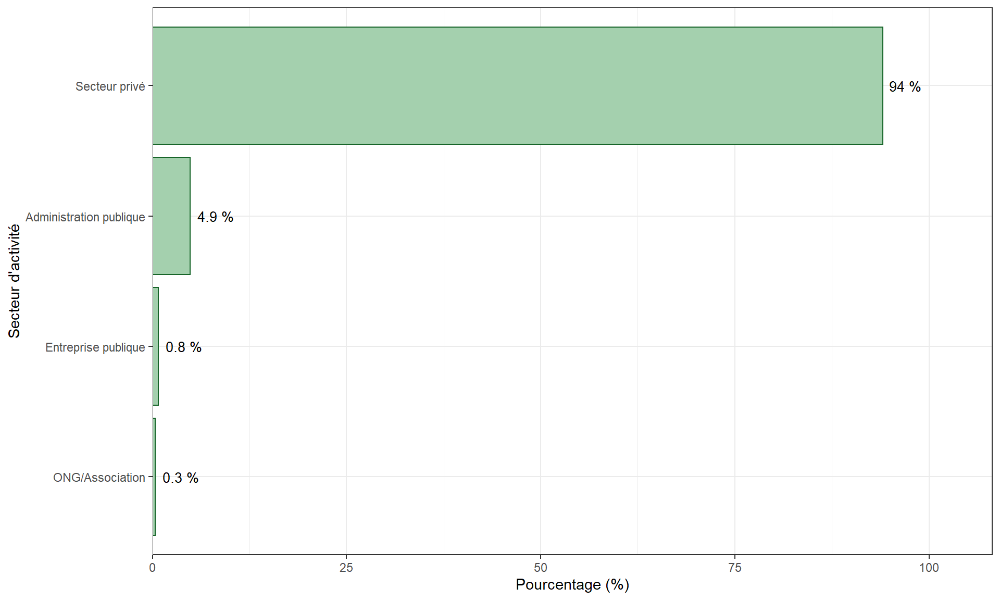
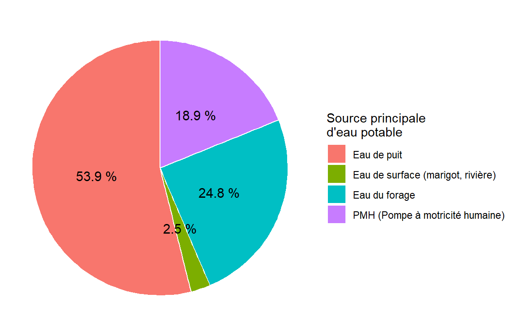
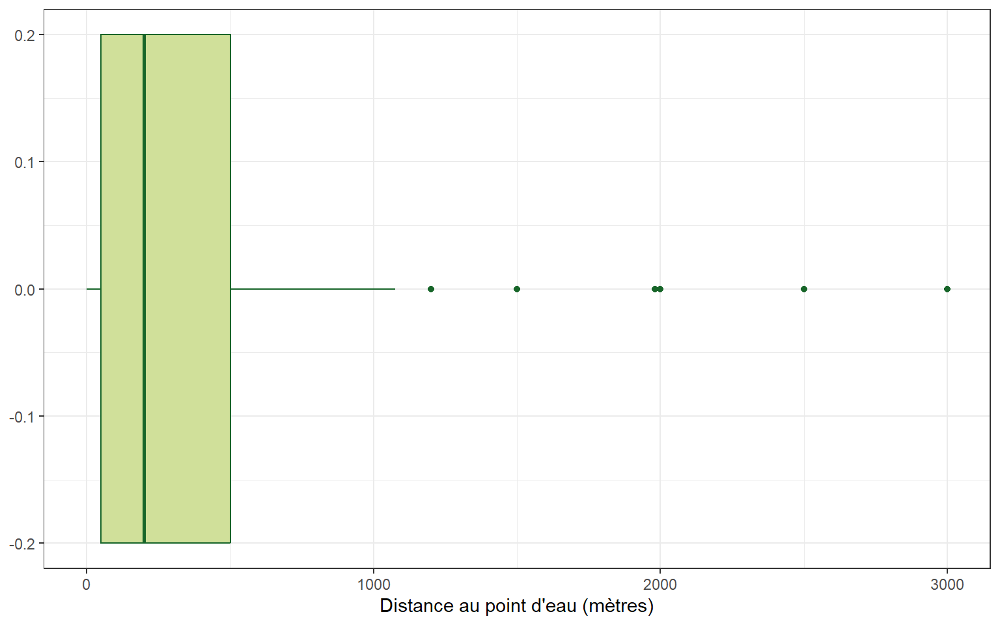
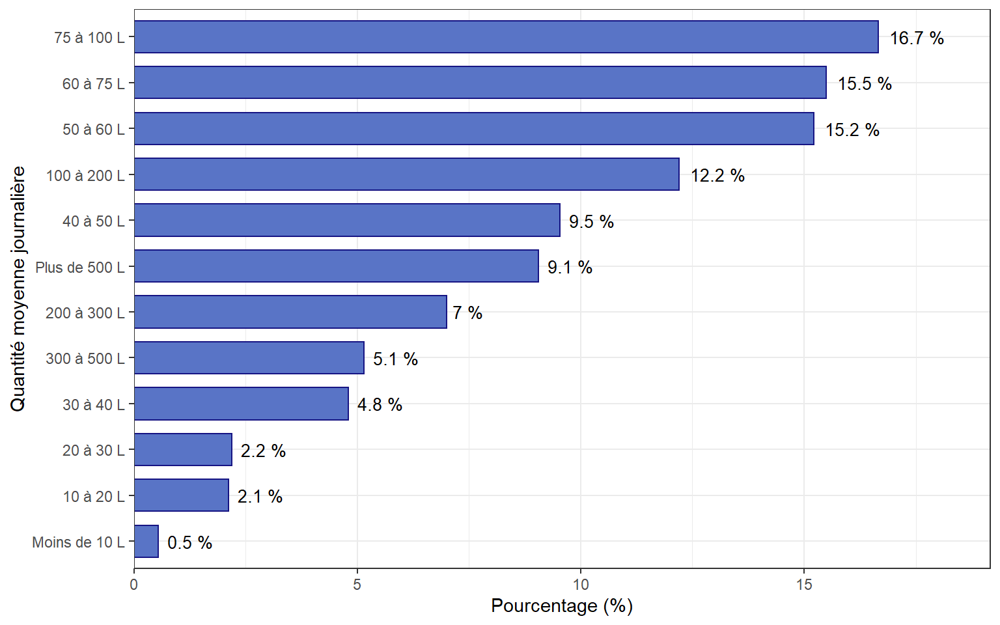

if(!require(pacman)) install.packages("pacman")
pacman::p_load(tidyverse,
readxl, readr, janitor,
tidyr, here,
gt,flextable, gtsummary, gtExtras)Analyse des conditions socioéconomiques et accès aux services essentiels des ménages de la commune de Tchaoudjo 2
1 - Introduction générale
Dans un contexte de décentralisation où les communes assument des responsabilités croissantes en matière de développement local et de services de proximité, la qualité des décisions publiques dépend largement de la connaissance du territoire et des populations qui y vivent. La planification du développement constitue ainsi un levier essentiel pour permettre aux collectivités territoriales d’organiser leur action, de hiérarchiser les besoins et d’orienter efficacement les ressources disponibles vers l’amélioration des conditions de vie des populations. Planifier consiste à disposer d’un diagnostic suffisamment précis permettant de comprendre les dynamiques démographiques, sociales, économiques et territoriales qui déterminent les besoins des populations.
La connaissance des caractéristiques démographiques et socioéconomiques des ménages constitue un préalable à une planification locale fondée sur des données probantes. Des informations fiables sur la composition des ménages, le niveau d’éducation, l’emploi, les activités économiques, les sources de revenus, les conditions d’habitat, les facteurs de vulnérabilité ou encore l’accès aux services essentiels permettent aux autorités locales de mieux identifier les besoins, de cibler les populations et les territoires les plus vulnérables et d’effectuer des arbitrages dans l’allocation des ressources. Elles permettent également de suivre les transformations du territoire et d’apprécier la situation des différentes zones de la commune et celle de la commune par rapport à d’autres territoires ou aux tendances observées à l’échelle nationale. La disponibilité de données désagrégées à l’échelle communale représente ainsi un enjeu important pour une gouvernance locale davantage orientée vers les résultats.
C’est dans cette perspective que, dans le cadre du processus d’élaboration du Plan de développement communal (PDC) de Tchaoudjo 2, une enquête auprès des ménages a été réalisée afin de mieux documenter les caractéristiques et les conditions de vie de vie des populations. Les données recueillies portent notamment sur les caractéristiques sociodémographiques des ménages, l’éducation, la santé, l’emploi et les activités économiques, les revenus et moyens d’existence, l’habitat, l’accès à l’eau, l’assainissement, l’énergie, le transport ainsi que certaines caractéristiques de leur environnement. Au-delà de leur utilisation pour l’établissement du diagnostic communal, ces données offrent l’opportunité d’approfondir l’analyse des relations entre les conditions socioéconomiques des ménages et leur capacité à accéder aux services sociaux essentiels.
En effet, l’existence d’une école, d’une formation sanitaire ou d’un autre équipement collectif sur un territoire ne garantit pas nécessairement son accessibilité effective à l’ensemble de la population. Un ménage peut, par exemple, renoncer ou recourir tardivement aux soins de santé en raison de ressources financières insuffisantes, de l’éloignement d’une formation sanitaire ou des coûts de transport. De même, la fréquentation scolaire peut être affectée par les ressources du ménage, la distance séparant le domicile de l’établissement, les caractéristiques du chef de ménage ou encore la zone de résidence. Il importe dès lors de dépasser la simple mesure du niveau d’accès aux services pour chercher à comprendre les facteurs susceptibles d’expliquer les différences observées entre les ménages.
La problématique centrale de ce mémoire consiste ainsi à analyser dans quelle mesure les conditions socioéconomiques et sociodémographiques des ménages influencent leur accès aux services sociaux de base dans la commune de Tchaoudjo 2. Les ménages accèdent-ils moins aux soins principalement en raison de contraintes financières ou du fait de l’éloignement des structures sanitaires ? Les contraintes économiques expliquent-elles davantage les difficultés d’accès aux services que d’autres caractéristiques telles que le niveau d’éducation du chef de ménage, la composition du ménage ou la zone de résidence ? Plus généralement, dans quelle mesure les caractéristiques socioéconomiques des ménages de Tchaoudjo 2 sont-elles associées à leur niveau d’accès aux services essentiels ? L’analyse de ces différentes dimensions permettra de mieux comprendre les mécanismes par lesquels les contraintes socioéconomiques et territoriales peuvent se traduire par des limitations d’accès aux services sociaux de base.
Pour répondre à cette problématique, notre étude est structurée en trois chapitres. Le premier chapitre présente le cadre conceptuel et méthodologique de l’étude, notamment les concepts, les données, les variables et les méthodes d’analyse retenues. Le deuxième chapitre est consacré à la revue de la littérature théorique et empirique sur les relations entre caractéristiques socioéconomiques des ménages et accès aux services sociaux de base. Enfin, le troisième chapitre analyse, à partir des données de l’enquête auprès des ménages, l’effet des caractéristiques socioéconomiques, sociodémographiques et territoriales sur l’accès aux services sociaux de base dans la commune de Tchaoudjo 2, avant d’en dégager les principaux enseignements pour la planification du développement communal.
2 - Cadre conceptuel
2.1 - Objectifs du mémoire
2.1.1 - Objectif général
Analyser les conditions socioéconomiques des ménages de la commune de Tchaoudjo 2 et les facteurs associés à leur accès aux services essentiels, afin d’en dégager les principaux enjeux pour le développement communal.
2.1.2 - Objectifs spécifiques
- Caractériser le profil démographique et socioéconomique des ménages de Tchaoudjo 2 ;
- Analyser les différences d’accès aux services essentiels selon les caractéristiques socioéconomiques et la localisation géographique des ménages ;
- Formuler des recommandations susceptibles d’améliorer le ciblage des interventions communales.
2.2 - Problématique
L’amélioration des conditions de vie des populations constitue l’une des finalités du développement local. Elle dépend à la fois des possibilités offertes aux ménages d’exercer des activités économiques et de générer des revenus, mais aussi de leur capacité à accéder à des services essentiels tels que l’eau potable, l’assainissement, l’électricité, l’éducation, la santé et les infrastructures de mobilité. Or, l’existence d’une infrastructure ou d’un service dans une commune ne signifie pas nécessairement que l’ensemble des ménages y accède dans des conditions similaires. L’accès peut être influencé par la localisation géographique, les caractéristiques économiques du ménage, les distances, les infrastructures disponibles, les coûts ou encore certaines caractéristiques sociodémographiques.
Dans le cas de Tchaoudjo 2, les premiers résultats du diagnostic communal montrent simultanément des progrès dans certains domaines et la persistance de contraintes. À titre d’exemple, l’enquête fait apparaître une combinaison importante entre raccordement au réseau électrique et recours aux solutions solaires, tandis que les conditions d’accès à l’eau potable et à d’autres services présentent des situations variables selon les territoires. Les analyses préliminaires réalisées montrent également des associations statistiquement significatives entre certaines variables d’accès aux services et la zone de résidence. La problématique peut donc être formulée autour de la question suivante : Dans quelle mesure les caractéristiques socioéconomiques et territoriales des ménages de Tchaoudjo 2 sont-elles associées à leur niveau d’accès aux services essentiels ?
2.3 - Questions de recherche
Quelles sont les conditions socioéconomiques des ménages de Tchaoudjo 2 et quels facteurs sont associés à leur accès aux services essentiels ? Les questions spécifiques suivantes sont posées :
- Quelles sont les principales caractéristiques démographiques et socioéconomiques des ménages de Tchaoudjo 2 ?
- Existe-t-il des différences significatives dans l’accès aux services essentiels selon les caractéristiques socioéconomiques des ménages et leur zone de résidence ?
- Quels enseignements ces résultats peuvent-ils fournir pour améliorer le ciblage des interventions de développement communal ?
2.4 - Hypothèses de recherche
Hypothèse 1 : Conditions socioéconomiques Les ménages de Tchaoudjo 2 présentent des conditions socioéconomiques différenciées selon leurs caractéristiques démographiques, leurs activités économiques et leur localisation géographique.
Hypothèse 2 : Relation entre situation socioéconomique et services essentiels Les caractéristiques socioéconomiques des ménages sont significativement associées à leur niveau d’accès aux services essentiels.
2.5 - Résultats attendus
À l’issue de cette étude, les principaux résultats attendus sont :
• Le profil socioéconomique et sociodémographique des ménages de la commune de Tchaoudjo 2 est établi à partir des données de l’enquête ménage ;
• Les relations entre les caractéristiques sociodémographiques des ménages et leur accès aux services sociaux de base sont analysés, notamment en fonction du niveau d’éducation du chef de ménage, de la taille et de la composition du ménage ;
• Des recommandations fondées sur les résultats de l’étude sont formulées afin d’améliorer le ciblage des interventions, la priorisation des investissements et la planification des services sociaux de base dans la commune de Tchaoudjo 2.
2.6 - Définitions des principaux concepts
2.6.1 - Le ménage
Le ménage est l’unité fondamentale d’observation de l’étude. Le concept de « ménage » est fondé sur les dispositions prises par les personnes individuellement ou d’une façon collective afin de pourvoir à leurs besoins vitaux. On distingue deux sortes de ménages : le ménage ordinaire et le ménage collectif.
2.6.1.1 - Le ménage ordinaire
Le ménage ordinaire est constitué par une personne ou un groupe de personnes apparentées ou non, vivant dans une même unité d’habitation, prenant le plus souvent leurs repas en commun, subvenant ensemble à leurs autres besoins essentiels et reconnaissant l’autorité d’une personne de référence appelée Chef de Ménage (CM). Une concession peut donc abriter plusieurs ménages ordinaires . Le chef de la concession n’est pas le chef de tous les ménages de la concession mais uniquement le chef du ménage auquel il appartient. Quelques cas spécifiques de ménages ordinaires peuvent être :
- un homme avec son épouse ou ses épouses avec ou sans enfant(s) ;
- un homme avec son épouse ou ses épouses avec leurs enfants non mariés et leurs parents ;
- un homme avec son ou ses épouse(s) vivant avec leurs enfants mariés partageant le même repas ;
- un homme ou une femme vivant avec ses enfants ;
- un homme ou une femme vivant seul.
Il faudra également différencier un ménage et une famille. Les membres d’un ménage ne sont pas nécessairement apparentés alors que tel est le cas pour les membres d’une famille. De même, les membres d’une famille peuvent ne pas vivre ensemble alors que c’est le cas pour les membres d’un ménage.
2.6.1.2 - Le ménage collectif
Un ménage collectif est constitué par un groupe de personnes, sans lien de parenté a priori, qui vivent ensemble au sein d’une même institution pour des raisons de santé, d’études, de religion, de travail, de voyage, de privation de liberté et autres. C’est l’institution qui règlemente les conditions de leur coexistence, compte tenu de son statut et de ses propres objectifs. Entrent dans ce cadre les institutions suivantes :
- Les casernes ;
- Les communautés de religieux ;
- Les orphelinats ;
- Les centres des personnes vivant avec un handicap ;
- Les prisons/centres de détention /établissements pénitenciers ;
- Les hôtels ;
- Les hôpitaux ;
- Les internats scolaires/universitaires ;
- Les cités scolaires/universitaires ;
- Les sans-abris ;
- Les villages des accompagnants : espace aménagé à l’intérieur d’un hôpital pour héberger temporairement ceux qui accompagnent les hospitalisés.
2.6.2 - Conditions socioéconomiques
Ensemble des caractéristiques relatives à la situation économique et sociale des ménages : activité, emploi, revenus, éducation, habitat, moyens de production, patrimoine, etc.
2.6.3 - Services essentiels
Ensemble des services contribuant directement aux besoins fondamentaux et aux conditions de vie : eau, assainissement, énergie, santé, éducation, mobilité, etc.
2.6.4 - Accès
L’accès à un service essentiel ne se limite pas seulement à la présence d’une infrastructure ou à un service public de base. L’accès peut faire référence à la disponibilité du service, son accessibilité géographique et économique, son utilisation effective, la qualité et/ou la permanence du service.
3 - Cadre méthodologique
3.1 - Méthode d’analyse
Pour atteindre les objectifs assignés à notre recherche, une méthodologie combinant la recherche documentaire et l’analyse de données d’enquêtes a été privilégiée. L’analyse se fera donc en deux étapes :
La première étape consiste à faire une analyse documentaire ou revue de la littérature sur le sujet, afin de faire ressortir les travaux déjà effectués dans le domaine et d’en étudier les différentes positions et théories proposées par les divers auteurs. Cette recherche documentaire a été menée via internet et les documents collectés auprès des acteurs et autorités communales sur le terrain.
La deuxième étape a été une étude qui repose sur une approche quantitative fondée sur une enquête auprès des ménages réalisée dans les différentes localités de la commune de Tchaoudjo 2. Ce choix méthodologique permet de recueillir directement auprès des populations des données détaillées sur leurs caractéristiques sociodémographiques, leurs activités et conditions socioéconomiques ainsi que leur niveau d’accès aux services sociaux de base, notamment l’eau potable, l’hygiène, l’assainissement, l’éducation et la santé. Par rapport à une simple revue documentaire, l’enquête ménage présente l’avantage de produire des données primaires, récentes et désagrégées à l’échelle locale, permettant de mieux rendre compte des réalités vécues par les ménages et des différences pouvant exister entre catégories de population et zones géographiques. Elle permet également de mettre en relation plusieurs caractéristiques des ménages afin d’analyser statistiquement les facteurs économiques, sociodémographiques et territoriaux associés aux difficultés d’accès aux services essentiels.
Cette approche présente néanmoins certaines limites. Les informations recueillies reposent en partie sur les déclarations des personnes enquêtées et peuvent ainsi être affectées par des erreurs de mémoire, des difficultés d’estimation notamment pour les revenus et certaines dépenses ou des biais de déclaration. Par ailleurs, une enquête réalisée à un moment donné fournit essentiellement une photographie de la situation et permet difficilement d’établir, à elle seule, des relations de causalité entre les caractéristiques socioéconomiques et l’accès aux services. Ces limites seront prises en compte dans l’interprétation des résultats et, lorsque cela est pertinent, les données de l’enquête seront confrontées aux informations issues des sources documentaires et administratives disponibles.
L’analyse a été menée à plusieurs niveaux, à savoir une analyse statistique univariée, bivariée et multivariée. Pour cela, nous utiliserons les outils comme les statistiques descriptives, test de Khi-2, la comparaison de moyenne, l’ANOVA, en fonction des types de variables et de l’objectif recherché par l’analyse. Une méthode économétrique relative aux variables qualitatives est également envisagée pour l’analyse.
Pour le traitement des données, nous avons utilisé le logiciel R et l’IDE Positron pour la manipulation des données, la réalisation des graphiques, les tests statistiques et l’analyse économétrique au besoin. Le choix de R s’est imposé par sa simplicité, la reproductibilité, l’existence de nombreux packages pour tout type d’analyse notamment le Tidyverse et la grande disponibilité de ressources en ligne sur cet outil.
3.2 - Population d’étude
La population cible est constituée des ménages résidant dans la commune de Tchaoudjo 2. Dans le cadre de notre étude, l’unité statistique est donc le ménage. Le chef de ménage constitue le principal répondant de l’enquête, en raison de sa connaissance supposée des caractéristiques générales du ménage, de ses activités économiques, de ses ressources, de ses conditions de vie et de son accès aux différents services essentiels.
Les informations recueillies auprès du chef de ménage ont permis ainsi de caractériser l’ensemble du ménage, sans pour autant assimiler le chef de ménage à l’unité statistique. Certaines caractéristiques propres au chef de ménage, telles que le sexe, l’âge, le niveau d’instruction ou l’activité professionnelle, sont également être utilisées comme variables explicatives afin d’analyser leur association avec les conditions socioéconomiques et l’accès du ménage aux services sociaux de base.
3.3 - Échantillonnage
Dans le cadre de l’enquête auprès des ménages, un échantillonnage stratifié géographique a été retenu afin de garantir une couverture représentative des différentes parties du territoire communal. La commune, dont la population totale est de 24 891 habitants selon le Recensemsent Général de la Population et de l’Habitat (RGPH 5, 2022), a été subdivisée en quatre strates géographiques : Nord-Est, Nord-Ouest, Sud-Est et Sud-Ouest. Sur la base d’une hypothèse moyenne de 5 personnes par ménage, la population communale correspond à environ 4 978 ménages.
En tenant compte de la proportion de population des localités selon le RGPH 5 2022, la répartition des ménages entre les quatre strates est la suivante : 1 039 ménages dans la zone Nord-Est (20,9 %), 877 ménages dans la zone Nord-Ouest (17,6 %), 2 431 ménages dans la zone Sud-Est (48,8 %) et 631 ménages dans la zone Sud-Ouest (12,7 %). Cette stratification permet de tenir compte de la répartition spatiale de la population et d’assurer la présence de chacune des zones dans l’échantillon.
La taille minimale de l’échantillon a ensuite été déterminée indépendamment pour chacune des quatre strates, à partir de la formule de Dagnelie pour l’estimation d’une proportion dans une population finie. Cette approche permet d’adapter la taille de l’échantillon à la population de chaque zone, plutôt que de calculer un seul échantillon pour l’ensemble de la commune et de le répartir mécaniquement entre les zones. La taille finale de l’échantillon communal correspond à la somme des tailles minimales obtenues pour les quatre strates.
La sélection des ménages enquêtés est ensuite effectuée à l’intérieur de chaque strate, selon une procédure de tirage définie pour assurer une sélection aussi objective et représentative que possible des ménages. Les enquêteurs sélectionnent les ménages selon un itinéraire en sautant un ménage sur deux. Ainsi, chaque zone géographique constitue une strate d’échantillonnage indépendante, tandis que les ménages constituent les unités statistiques directement enquêtées.
La taille minimum de l’échantillon (n) dans chaque zone est obtenue en utilisant l’approximation normale de la distribution binomiale de Dagnélie suivant la formule :
\[\frac{z^2\times p(1-p)\times N} {z^2\times p(1-p) + (N-1) \times y^2}\] Avec : n : taille de l’échantillon ; N : nombre de ménage ; p : proportion de personnes disposée à répondre aux questions. p n’étant pas vraiment connue, sa valeur est fixée dans le cadre de cette étude à 0,5 afin d’avoir un grand nombre d’échantillons conformément aux règles statistiques ; y : Marge d’erreur ; z : la valeur associée à l’intervalle de confiance d’échantillonnage.
Avec les valeurs de : p = 0,5 ; y = 0,05 ; z à 95% = 1,96 ; Taux estimé de non réponse = 0,1 ; N = 1039 (Nord-Est), 877 (Nord-Ouest), 2431(Sud-Est) et 631(Sud-Ouest).
La Table 1 présente l’échantillon minimum représentatif pour chaque zone d’enquête et le nombre de ménages à enquêter prévus pour chaque zonelors de la collecte des données sur le terrain.
| Zone | Minimum | Prévu |
|---|---|---|
| Nord-Est | 192 | 312 |
| Nord-Ouest | 187 | 298 |
| Sud-Est | 210 | 369 |
| Sud-Ouest | 266 | 313 |
| Total | 855 | 1292 |
3.4 - Outils de collecte de données
Pour la collecte des données, nous avons utilisé l’outils Kobotoolbox et l’application mobile KoboCollect sur Android. Ces outils ont l’avantage d’être gratuit et open sources. Aussi, le mode hors ligne disponible est idéal pour le terrain ainsi que la prise en charge de la géolocalisation et du multimédia (image, vidéo, audio). La plateforme Kobotoolbox a permis d’élaborer le questionnaire, de paramétrer les sauts conditionnels, la sélection en cascade et les critères de validation. Ces applications présente aussi l’avantage de géoréférencer les unités enquêtés, de suivre l’évolution des agents de collecte sur le terrain, de disposer des données en temps réel et de faciliter les contrôles des données à distance.
3.5 - Le questionnaire d’enquête et le dictionnaire de données
Le questionnaire, conçu et administré à l’aide de KoboToolbox, regroupe les variables d’intérêt de l’étude en douze sections thématiques complémentaires, couvrant les principales dimensions démographiques, socioéconomiques, environnementales et d’accès aux services essentiels des ménages. Chaque section vise à recueillir des informations spécifiques permettant de caractériser les conditions de vie des ménages et d’identifier les disparités territoriales ainsi que les principaux besoins de la population.
- Section 1 – Identification et localisation : permet d’identifier le ménage enquêté et de renseigner sa localisation géographique et administrative afin de faciliter la désagrégation spatiale des résultats.
- Section 2 – Accès à l’eau : renseigne sur les principales sources d’approvisionnement en eau, leur accessibilité, les distances parcourues et les conditions d’accès des ménages à l’eau.
- Section 3 – Accès à la santé : apprécie l’accès des ménages aux structures et services de santé, notamment en termes de disponibilité, de distance et de recours aux soins.
- Section 4 – Hygiène et assainissement : analyse les pratiques d’hygiène ainsi que l’accès et l’utilisation des infrastructures d’assainissement et des dispositifs de gestion des déchets.
- Section 5 – Caractéristiques de l’habitat : décrit les conditions de logement des ménages à travers le type d’habitat, les matériaux de construction, les équipements et certaines caractéristiques du cadre de vie.
- Section 6 – Accès à l’électricité et à l’énergie : renseigne sur les sources d’électricité et d’éclairage ainsi que sur les principales formes d’énergie utilisées par les ménages, notamment pour la cuisson.
- Section 7 – Environnement, changement climatique et ressources forestières : recueille les perceptions et pratiques des ménages concernant l’environnement, les effets du changement climatique, les ressources forestières et leur gestion.
- Section 8 – Transport et mobilité : examine les moyens de déplacement utilisés, les conditions de mobilité ainsi que les principales contraintes rencontrées pour le transport des personnes et des biens.
- Section 9 – Caractéristiques sociodémographiques : décrit la composition et le profil des membres du ménage à partir de variables telles que le sexe, l’âge, le statut matrimonial et d’autres caractéristiques démographiques.
- Section 10 – Éducation et formation : renseigne sur le niveau d’instruction, la fréquentation scolaire, l’accès à l’éducation et à la formation ainsi que les éventuelles difficultés rencontrées.
- Section 11 – Emploi, revenu et conditions de vie : analyse la situation économique des ménages à travers l’activité, l’emploi, les sources de revenus et différents éléments permettant d’apprécier leurs conditions de vie.
- Section 12 – Conclusion : clôture l’entretien en recueillant, le cas échéant, les observations, préoccupations ou informations complémentaires du ménage utiles à l’analyse.
3.6 - Recrutement et formation des enquêteurs
Les agents de collecte de données ont été recrutés avec des critétères prédéfis comme avoir au moins le BAC II, disposer d’un smartphone, d’avoir une expérience dans l’utilisation de l’outil informatique, avoir une expérience en matière de collecte de données sociodémographique et/ou une expérience dans l’utilisation d’un outil digital de collecte de données. Les profils des agents ont ensuite été vérifié et validés après un attention pour s’assurer de leur capacité à faire l’enquête sur le terrain. Les agents de collecte de données sont en grande majorité des personnes qui ont une bonne connaissance du territoire géographique à savoir la commune de Tchaoudjo 2.
Afin de garantir la qualité, la fiabilité et la cohérence des données collectées auprès des ménages, les enquêteurs ont été formés sur les outils numériques de collecte de données, les techniques d’enquête et les règles déontologiques en matière de collecte de données auprès des ménages. La formation a durée une journée en plus d’une demi-journé de pré-enquête de test sur le terrain avant leur déploiement pour l’enquête proprement dite. La formation a permis de renforcer les capacités des enquêteurs sur :
- la méthodologie de collecte ;
- l’utilisation de KoboCollect ;
- les techniques d’entretien ;
- l’éthique de la collecte ;
- les simulations pratiques sur le terrain.
Au total vingt (20) enquêteurs dont onze (11) femmes ont été formés pour la collecte des données sur le terrain.
3.7 - Communication et sensibilisation
La communication et la sensibilisation ont été assuré par la mairie de Tchaoudjo 2. Elles ont consisté à des réunions d’informations des chefs de village et des CVD sur le processus et la période de l’activité. Ces derniers à leur tour ont informé leur population. L’atelier de lancement officiel du processus d’élaboration du PDC a également permis à l’équipe de consultant de sensibiliser les représentants des villages présents sur le processus de collecte de données dans les ménages.
3.8 - Réalisation de l’enquête et transfert des données
La collecte des données a durée trois (03) jours, du 6 au 8 août 2026. La méthode de collecte retenue est “l’interview directe”. Cette méthode consiste à se présenter dans chaque ménage, à poser des questions au Chef de ménage ou son répondant, c’est-à-dire tout autre membre capable d’y répondre et à enregistrer les renseignements recueillis. Les enquêteurs ont été répartis en 4 groupes selon les zones avec 3 superviseurs pour suivre et intervenir en cas de difficulté.
La collecte de données sur le terrain est assurée par les agents d’enquête à l’aide des smartphoses via l’application mobile KoboCollect. Les agents d’enquête collectent les données qui sont ensuite transférées automatiquement par internet sur un serveur de Kobotoolbox. Les Superviseurs consultes le nombre d’enquête réalisé chaque jour par chaque agent d’enquête et font le point au Chef de mission. Ce dernier vérifie en fin de journée sur Kobotoolbox les données collectées et les localités couvertes pour déceler des incohérences éventuelles.
3.9 - Outils de traitement et d’analyse
Le traitement et l’analyse des données est fait par le logiciel R et l’outils Quarto pour générer un rapport d’analyse. Quarto est un système de publication scientifique et technique qui permet de créer des documents reproductibles à partir d’un fichier source contenant à la fois du texte, du code, des tableaux, des graphiques et les résultats d’une analyse. Dans notre cas d’utilisation de R, Quarto est particulièrement intéressant pour produire un rapport d’analyse en s’affranchissant des outils comme Word et Excel et de pouvoir faire tout au même endroit sans faire des “navettes” entre différents outils. Quarto permet également de générer des documents dans différents formats (HTML, PDF, Word, etc.) à partir d’un même fichier source, ce qui facilite la diffusion et le partage des résultats. Il offre également la possibilité d’intégrer des visualisations interactives et des graphiques dynamiques, ce qui peut enrichir la présentation des résultats.
3.10 - Nettoyage des données
Å l’issue de la collecte, les données sont exportées depuis Kobotoolbox au format Excel pour le traitement et l’analyse. Le fichier de données est ensuite nettoyé et préparé dans R et exporté en format CSV pour l’analyse statistique.
Le nettoyage des données a essentiellement consisté à :
- la suppresion les colonnes inutiles pour notre analyse (
start,end,username,deviceid,phonenumber,Localisation,Localisation_altitude,Localisation_precision); - renommer presque toutes les variables issues des questions du formulaire Kobotoolbox pour réduire la longueur des colonne tout en s’assurant que le noms de colonne soit compréhensible ;
- recoder les modalités de certaines variables prenant des valeur 1 = oui et 0 = non (voir le fichier le nettoayge
enquete_tchaoudjo_clean.qmd); - faire le traitement des colonnes “autre à préciser”.
La Table 2 ci-dessous présente le nombre de ménages enquêtés par rapport à l’échantillon minimum représentative, le nombre prévu pour chaque zone et le nombre effectivement réalisé à la fin de l’enquête.
| Zone | Minimum | Prévu | Réalisé |
|---|---|---|---|
| Nord-Est | 192 | 312 | 459 |
| Nord-Ouest | 187 | 298 | 245 |
| Sud-Est | 210 | 369 | 441 |
| Sud-Ouest | 266 | 313 | 313 |
| Total général | 855 | 1 292 | 1 458 |
3.11 - Installation des packages
Rôle des différents packages utilisés dans l’analyse des données :
- pacman : permet d’installer et de charger facilement plusieurs packages.
- tidyverse : est un ensemble de packages pour la manipulation et la visualisation des données. Il contient entre autres
dplyr,ggplot2,readrqui sont utilisés dans ce rapport. - readxl, readr : Packages pour lire des fichiers csv, Excel et texte.
- janitor : Package pour le nettoyage des données et la création de tableau de fréquences.
- tidyr : pour réorganiser et restructurer les tableaux en format long ou inversement selon les besoins.
- here : pour gérer les chemins de fichiers.
- gt, flextable, gtsummary, gtExtras : Packages pour la création de tableaux formatés.
3.12 - Importation des données
# Importation des données
data_tchaoudjo2 <- read_csv(here("data/data_tchaoudjo2.csv"))
head(data_tchaoudjo2, 10) # visualisation des 10 premières lignes du jeu de données4 - Résultats, analyse et discussion
4.1 - Caractéristiques démographiques
4.1.1 - Profil démographique des ménages
4.1.1.1 - Répartition des enquêtés selon le sexe
| Sexe | Effectif | Pourcentage |
|---|---|---|
| Féminin | 355 | 24.3% |
| Masculin | 1103 | 75.7% |
| Total | 1458 | 100.0% |
NoteInterprétation
La Table 3 met en évidence une nette prédominance des hommes parmi les chefs de ménage enquêtés : ils représentent 75,7 % contre 24,3 % de femmes. Cette configuration apparaît cohérente avec le contexte socioculturel togolais, dans lequel la responsabilité du ménage est encore majoritairement attribuée aux hommes. La proportion non négligeable de ménages dirigés par des femmes, soit près d’un ménage sur quatre dans l’échantillon, mérite toutefois une attention particulière dans l’analyse de leurs caractéristiques socioéconomiques et de leurs éventuelles vulnérabilités.
4.1.1.2 - Répartition des enquêtés selon la tranche d’âge et le sexe

NoteInterprétation
La répartition des chefs de ménage selon l’âge montre une forte concentration dans les classes d’âge actives, notamment entre 35 et 64 ans (68,5 %), avec un maximum observé chez les 45–49 ans (14,6 % ; 213 personnes), suivis des 35–39 ans (13,2 % ; 192) et des 40–44 ans (12,6 % ; 184). Les jeunes chefs de ménage sont relativement peu nombreux, particulièrement chez les 18–24 ans (1,7 % ; 25 personnes), ce qui suggère que l’accès au statut de chef de ménage intervient généralement à un âge plus avancé, probablement en lien avec la constitution d’un ménage et l’acquisition d’une certaine autonomie économique. À partir de 65 ans, les effectifs diminuent progressivement, même si la présence de chefs de ménage âgés demeure notable (15,8 % ont 65 ans ou plus). La prédominance masculine observée dans l’ensemble de l’échantillon se retrouve dans toutes les classes d’âge, avec 1 103 hommes (75,7 %) contre 355 femmes (24,3 %) au total. Cette structure met ainsi en évidence un profil de chefs de ménage principalement masculins et d’âge adulte, tout en révélant la coexistence de plusieurs générations de responsables de ménage.
4.1.1.3 - Situation matrimoniale selon le sexe du chefs de ménage
| Situation_matrimoniale | Féminin | Masculin | Total |
|---|---|---|---|
| Marié(e)/En couple | 103 | 919 | 1022 |
| Veuf(ve) | 190 | 71 | 261 |
| Célibataire | 45 | 98 | 143 |
| Divorcé(e) | 17 | 15 | 32 |
| Total | 355 | 1103 | 1458 |
NoteInterprétation
Les résultats de la Table 5 montrent que la grande majorité des chefs de ménage enquêtés vivent en couple ou sont mariés. Cette catégorie représente 70,1 % des répondants, soit 1 022 personnes sur les 1 458 enquêtées. Les veufs et veuves constituent la deuxième catégorie la plus importante, avec 17,9 % des répondants (261 personnes), devant les célibataires qui représentent 9,8 % (143 personnes). Les personnes divorcées sont, quant à elles, faiblement représentées avec seulement 2,2 % (32 personnes). Au total, près de trois chefs de ménage sur dix (29,9 %) ne vivent donc pas en couple au moment de l’enquête.
Les données montrent également que le veuvage est nettement plus représenté chez les femmes chefs de ménage : sur les 261 personnes veufs ou veuves, 190 sont des femmes contre 71 hommes, soit environ 72,8 % de femmes; alors que les femmes ne représentent que 24,3 % de l’ensemble des chefs de ménage enquêtés.
Ces résultats suggèrent donc que l’accès au statut de chef de ménage diffère fortement selon le sexe et la situation matrimoniale : chez les hommes, il est principalement associé à la vie en couple, tandis que chez les femmes, il apparaît beaucoup plus fréquemment associé au veuvage. Cette situation pourrait avoir des implications importantes sur les conditions socioéconomiques et l’accès aux services essentiels pour les ménages dirigés par des femmes, notamment en termes de ressources financières, de charge familiale et de vulnérabilité sociale.
Test du Khi-deux d’indépendance entre la situation matrimoniale et le sexe du chef de ménage permet de déterminer si les différences observées sont statistiquement significatives. Le V de Cramér permettra ensuite d’en apprécier l’intensité de cette relation.
Pearson's Chi-squared test
data: table(data_tchaoudjo2$situation_matri, data_tchaoudjo2$sexe)
X-squared = 463.9, df = 3, p-value < 2.2e-16
Féminin Masculin
Célibataire 34.818244 108.1818
Divorcé(e) 7.791495 24.2085
Marié(e)/En couple 248.840878 773.1591
Veuf(ve) 63.549383 197.4506[1] "L'effectif attendu minimum est égal à : 7.79"[1] "La valeur du V de Cramer est égal à : 0.56"
NoteInterprétation
Le test du Khi-deux met en évidence une association statistiquement significative entre le sexe et la situation matrimoniale du chef de ménage, Khi2(3) = 463,9, p < 0,001. Les conditions d’application du test sont respectées, l’effectif théorique minimal étant de 7,79. Le V de Cramér V = 0,564 révèle par ailleurs une association importante entre les deux variables. Cette relation se caractérise principalement par une forte représentation des hommes parmi les chefs de ménage mariés ou vivant en couple et, inversement, par une forte représentation des femmes parmi les chefs de ménage veufs.
4.1.1.4 - Ethnie et religion du chef de ménage


NoteInterprétation
La Figure 2 mettent en évidence que 55,1 % des chefs de ménage sont Kabyè contre 21,7 % de Tem/Kotokoli. À elles seules, ces deux ethnies regroupent ainsi environ 76,8 % des chefs de ménage enquêtés de l’échantillon, traduisant une concentration relativement importante de la population autour de ces deux principaux groupes ethniques. Les autres groupes présentent des effectifs nettement plus faibles : les Peulh représentent 6 %, les Losso 5,4 %, les Lamba 5 % et les Nawda 2,7 %.
Le reste des partenances ethniques sont très minoritaires. Les Ewé représentent 0,8 %, des Moba avec 0,6 %, les Bassar 0,4 % et des Adja 0,3 %. La catégorie « Autres » (Ife, Konkomba, Sola, Akposso, Lokpa, Mina, Pouda, Samourè, Yaka, Zarma) regroupe 0,9 % des enquêtés. Par ailleurs, l’appartenance ethnique n’est pas renseignée pour 1 % des chefs de ménage.
Au niveau de la religion la Figure 3 montre que le christianisme constitue la religion la plus représentée parmi les chefs de ménage enquêtés, avec 42,9 % de l’effectif total. Il est suivi de l’islam, pratiqué par 31,5 % des chefs de ménage. Ces deux principales religions regroupent ainsi 74,4 % des enquêtés. Les religions traditionnelles concernent pour leur part 11,2 % des chefs de ménage. Par ailleurs, une proportion non négligeable des chefs de ménage, soit 13,6, déclare n’appartenir à aucune religion, tandis que 0,8 % n’ont pas précisé leur appartenance religieuse (NSP).
4.1.1.5 - Nombre de personnes à charge
Nombre de personne à charge
Min. : 0.000
1st Qu.: 3.000
Median : 5.000
Mean : 5.676
3rd Qu.: 8.000
Max. :25.000 
NoteInterprétation
Le nombre moyen de personnes à charge s’établit à 5,68 personnes, tandis que la médiane est de 5 personnes. Cela signifie que la moitié des ménages compte au plus 5 personnes à charge, et l’autre moitié au moins 5. La moyenne étant légèrement supérieure à la médiane, la distribution présente une certaine asymétrie (Figure 4) vers les valeurs élevées, liée à l’existence de ménages ayant un nombre important de personnes à charge.
Les quartiles montrent par ailleurs que 25 % des ménages ont au plus 3 personnes à charge, tandis que 75 % en ont au plus 8 ; autrement dit, la moitié centrale des ménages se situe entre 3 et 8 personnes à charge. Certains ménages ne déclarent donc aucune personne à charge, alors que d’autres supportent une charge familiale particulièrement élevée, pouvant atteindre 25 personnes puisque le nombre observé va de 0 à 25 personnes.
4.1.1.6 - Acte de naissance
| Enfants sans acte de naissance | Effectif | Pourcentage |
|---|---|---|
| Non | 1285 | 88.1% |
| Oui | 173 | 11.9% |
| Raisons de l'absence d'acte de naissance | Effectif | Pourcentage |
|---|---|---|
| Acte détruit ou perdu | 78 | 50.3% |
| Autre raison | 60 | 38.7% |
| Centre d'état civil trop éloigné | 11 | 7.1% |
| Coût d'établissement trop élevé | 6 | 3.9% |
NoteInterprétation
Les résultats de la Table 6 montrent que la grande majorité des ménages enquêtés (88,1 %) déclarent que les enfants ont un acte de naissance. Toutefois, 173 ménages (11,9 %) déclarent avoir au moins un enfant sans acte de naissance. Bien que minoritaire, cette proportion reste notable puisqu’elle signifie qu’environ un ménage sur huit est concerné. L’absence d’acte de naissance peut constituer un obstacle à l’exercice de certains droits et à l’accès à diverses démarches administratives et services, notamment en matière de scolarisation et d’identification.
Concernant les raisons évoquées dans la table Table 7, la principale difficulté tient à la destruction ou à la perte de l’acte de naissance, citée dans 50,3 % des cas renseignés. Les obstacles directement liés à l’accessibilité des services d’état civil apparaissent également : 7,1 % évoquent l’éloignement du centre d’état civil et 3,9 % le coût jugé trop élevé de l’établissement de l’acte.
Les « autres raisons » évoquées représentent également une part importante (38,7 %). Ces raisons sont : “l’établissement de l’acte est en cours”, “l’enfant n’était pas né au Togo”, “absence de régistre ou problème avec l’agent d’état civil”, “l’âge de l’enfant est dépassé”, “l’acte est fait mais c’est un faux”, “l’agent d’état civil a pris l’argent mais ne l’a pas fait”, “le père avait voyagé”, “le délai est dépassé”, “le manque de moyens financiers”, “par négligeance”, “l’enfant est un orphelin recueilli”, “l’oublie”. Ces résultats suggèrent ainsi que la problématique ne relève pas uniquement de l’enregistrement initial des naissances, mais également de la conservation et de la sécurisation des actes déjà établis.
4.1.2 - Education et formation
4.1.2.1 - Niveau d’éducation du chef de ménage
| Niveau d'étude | Féminin | Masculin | Total |
|---|---|---|---|
| Aucun | 188 (53.0%) | 382 (34.6%) | 570 (39.1%) |
| NSP | 0 (0.0%) | 6 (0.5%) | 6 (0.4%) |
| Primaire | 107 (30.1%) | 325 (29.5%) | 432 (29.6%) |
| Secondaire 1 (Collège) | 47 (13.2%) | 254 (23.0%) | 301 (20.6%) |
| Secondaire 2 (Lycée) | 10 (2.8%) | 110 (10.0%) | 120 (8.2%) |
| Université | 3 (0.8%) | 26 (2.4%) | 29 (2.0%) |
| Total | 355 (100.0%) | 1,103 (100.0%) | 1,458 (100.0%) |

NoteInterprétation
Selon la Table 8 et la Figure 5, le niveau d’instruction des chefs de ménage enquêtés demeure globalement faible. En effet, 39,1 % n’ont aucun niveau d’étude, tandis que 29,6 % ont atteint le primaire. Ainsi, près de sept chefs de ménage sur dix (68,7 %) n’ont pas dépassé le niveau primaire. À l’inverse, seuls 20,6 % ont atteint le secondaire 1, 8,2 % le secondaire 2 et 2,0 % l’université. Ces résultats mettent en évidence une diminution progressive des effectifs à mesure que le niveau d’étude s’élève.
Des différences importantes apparaissent également selon le sexe du chef de ménage. La proportion de personnes sans aucun niveau d’étude est nettement plus élevée chez les femmes (53,0 %) que chez les hommes (34,6 %). À l’inverse, les hommes sont proportionnellement plus nombreux aux niveaux secondaire 1 (23,0 % contre 13,2 % chez les femmes), secondaire 2 (10,0 % contre 2,8 %) et universitaire (2,4 % contre 0,8 %). Ces écarts indiquent que, parmi les chefs de ménage enquêtés, les femmes présentent globalement des niveaux d’instruction plus faibles que les hommes.
Test du Khi-deux d’indépendance entre le niveau d’éducation et le sexe du chef de ménage permet de déterminer si les différences observées sont statistiquement significatives. Le V de Cramér permettra ensuite d’en apprécier l’intensité de cette relation.
Pearson's Chi-squared test
data: with(filter(data_tchaoudjo2, education_niveau_etude != "NSP"), table(education_niveau_etude, sexe))
X-squared = 55.208, df = 4, p-value = 2.938e-11[1] "L'effectif attendu minimum est : 7.09"[1] "La valeur du V de Cramer est : 0.2"
NoteInterprétation
Après exclusion de la modalité « NSP », le test du Khi-deux de Pearson confirme l’existence d’une association statistiquement significative entre le sexe du chef de ménage et son niveau d’étude : (χ²(4) = 55,21), avec (p < 0,001). Les conditions d’application du test sont désormais pleinement satisfaites, puisque l’effectif théorique minimum est de 7,09, donc supérieur à 5. L’hypothèse d’indépendance entre les deux variables peut ainsi être rejetée : la répartition des niveaux d’étude diffère significativement selon le sexe des chefs de ménage enquêtés.
Cette association reste toutefois d’une intensité faible à modérée, comme l’indique le V de Cramér de 0,20. Les résultats descriptifs permettent d’en préciser le sens : les femmes chefs de ménage sont proportionnellement plus nombreuses à n’avoir aucun niveau d’étude (53,0 % contre 34,6 % chez les hommes), tandis que les hommes sont davantage représentés dans les niveaux secondaire et universitaire. Ces résultats mettent donc en évidence des disparités de niveau d’instruction selon le sexe parmi les chefs de ménage enquêtés, sans pour autant permettre d’établir une relation causale entre le sexe et le niveau d’étude.
4.1.2.2 - Relation entre l’éducation des enfants et le niveau d’étude du chef de ménage
| Niveau d'étude | Non | Oui | Total |
|---|---|---|---|
| Aucun | 536 (38.1%) | 34 (73.9%) | 570 (39.3%) |
| Primaire | 423 (30.1%) | 9 (19.6%) | 432 (29.8%) |
| Secondaire 1 (Collège) | 299 (21.3%) | 2 (4.3%) | 301 (20.7%) |
| Secondaire 2 (Lycée) | 119 (8.5%) | 1 (2.2%) | 120 (8.3%) |
| Université | 29 (2.1%) | 0 (0.0%) | 29 (2.0%) |
| Total | 1,406 (100.0%) | 46 (100.0%) | 1,452 (100.0%) |
NoteInterprétation
La Table 9 semblre mettre en évidence une relation entre le niveau d’étude du chef de ménage et la présence d’enfants de 9 à 14 ans non scolarisés dans le ménage. Parmi les 46 sur 1452 ménages déclarant des enfants de 9 à 14 ans non scolarisés, 73,9 % des chefs de ménage n’ont aucun niveau d’étude, contre seulement 38,1 % parmi les ménages ne déclarant pas cette situation. À l’inverse, les niveaux d’instruction plus élevés sont beaucoup moins représentés parmi les ménages concernés : 19,6 % des chefs ont le niveau primaire, 4,3 % le secondaire 1, 2,2 % le secondaire 2 et aucun n’a atteint l’université. Ces résultats suggèrent donc que la non-scolarisation des enfants de 9 à 14 ans est davantage observée dans les ménages dont le chef présente un faible niveau d’instruction.
Test du Khi-deux d’indépendance entre le niveau d’éducation du chef de ménage et la scolarisation des enfants (9-14 ans) permet de déterminer si les différences observées sont statistiquement significatives. Le V de Cramér permettra ensuite d’en apprécier l’intensité de cette relation.
Pearson's Chi-squared test
data: with(filter(data_tchaoudjo2, education_niveau_etude != "NSP"), table(education_niveau_etude, education_9_14ans_non_scolarise))
X-squared = 25.423, df = 4, p-value = 4.136e-05[1] "L'effectif attendu minimum est : 0.92"
WarningPoint d’attention
En raison de la faiblesse de certains effectifs théoriques, la significativité sera vérifiée à l’aide d’un test de Fisher. Ce test conserve les cinq niveaux d’étude tout en évitant de dépendre de l’approximation asymptotique du Khi-deux lorsque certains effectifs théoriques sont très faibles.
education_9_14ans_non_scolarise
education_niveau_etude Non Oui
Aucun 536 34
Primaire 423 9
Secondaire 1 (Collège) 299 2
Secondaire 2 (Lycée) 119 1
Université 29 0
Fisher's Exact Test for Count Data
data: tab_etude_parent_scolarisation
p-value = 6.736e-05
alternative hypothesis: two.sided[1] 0.1323211
NoteInterprétation
Les résultats mettent en évidence une association statistiquement significative entre le niveau d’étude du chef de ménage et la présence d’enfants de 9 à 14 ans non scolarisés dans le ménage. Le résultat confirme l’association observée (χ² = 25,42 ; p < 0,001). Les ménages concernés par la non-scolarisation sont particulièrement concentrés parmi ceux dont le chef n’a aucun niveau d’étude : 73,9 % des ménages déclarant au moins un enfant de 9 à 14 ans non scolarisé ont un chef sans niveau d’étude, contre 38,1 % parmi les ménages non concernés. Toutefois, le V de Cramér (V = 0,13) indique que l’intensité de l’association demeure faible. Ces résultats mettent ainsi en évidence un lien statistique entre les deux variables, sans permettre d’établir une relation de causalité.
4.1.2.3 - Raison de la non scolarisation des enfants
| Raisons de la non scolarisation des enfants | Effectif | Pourcentage |
|---|---|---|
| Abandon, mauvais résultats scolaires | 19 | 41.3% |
| En apprentissage | 9 | 19.6% |
| Autres raisons | 5 | 10.9% |
| Trop jeune | 4 | 8.7% |
| Ecole trop éloignée | 3 | 6.5% |
| Maladie, infirmité ou accident | 2 | 4.3% |
| Manque de moyens financiers | 2 | 4.3% |
| Préférence pour le travail | 2 | 4.3% |
NoteInterprétation
Les résultats de la Table 10 montrent que la principale raison de non-scolarisation des enfants de 9-14 ans est l’abandon ou les mauvais résultats scolaires, qui représentent 41,3 % des cas (19 enfants). Cette situation met en évidence l’importance des difficultés de maintien des enfants dans le système scolaire au niveau de certains ménages. L’apprentissage constitue la deuxième raison avec 19,6 % (9 cas), ce qui indique qu’une partie des enfants non scolarisés s’oriente vers l’acquisition d’un métier en dehors du cursus scolaire formel alors que loi impose la scolarité pour les enfants jusqu’à l’âge de 15 ans au Togo. Les autres raisons représentent 10,9 %, tandis que 8,7 % des cas sont liés au fait que l’enfant est considéré comme trop jeune, ce qui parrait atypique.
Les contraintes d’accessibilité ou socioéconomiques apparaissent moins fréquemment citées : l’éloignement de l’école représente 6,5 % des cas, tandis que le manque de moyens financiers, la maladie, l’infirmité ou un accident et la préférence pour le travail représentent chacun 4,3 %. Dans l’ensemble, les résultats suggèrent que la non-scolarisation observée est davantage associée aux difficultés de parcours et de maintien à l’école qu’aux seules contraintes financières ou géographiques. Toutefois un faible nombre de ménages sont concernés par ces situations à savoir seulement 46 ménages sur 1452 qui ont répondu à la question.
4.1.2.4 - Alphabétisation
| Ne sais pas lire et écrire | Effectif | Pourcentage |
|---|---|---|
| Non | 1351 | 92.7% |
| Oui | 107 | 7.3% |
| Suit un cours d'alphabétisation | Effectif | Pourcentage |
|---|---|---|
| Non | 96 | 89.7% |
| Oui | 7 | 6.5% |
| NSP | 4 | 3.7% |
4.2 Interprétation
Les résultats des Table 11 et Table 12 montrent que 107 ménages enquêtés, soit 7,3 %, déclarent compter au moins une personne âgée de 15 ans ou plus ne sachant ni lire ni écrire, contre 92,7 % qui ne signalent aucune personne dans cette situation. Bien que cette proportion soit minoritaire à l’échelle des ménages enquêtés, elle met en évidence la persistance de situations d’analphabétisme au sein d’une partie de la population adulte de la commune.
Parmi les ménages concernés, le recours aux dispositifs d’alphabétisation apparaît toutefois très limité : seulement 7 personnes, soit 6,5 %, suivent un cours d’alphabétisation, contre 96 (89,7 %) qui n’en suivent pas ; 3,7 % des réponses sont indéterminées (NSP). Ainsi, la grande majorité des personnes identifiées comme ne sachant ni lire ni écrire ne semble pas bénéficier d’un apprentissage compensatoire. Ces résultats mettent en évidence un écart important entre l’existence d’un besoin d’alphabétisation et la participation effective aux cours, ce qui invite à examiner notamment la disponibilité et l’accessibilité des programmes d’alphabétisation ainsi que les facteurs susceptibles de limiter leur fréquentation.
4.2.0.1 - Apprentissage et formation professionnelle
| Formation professionnelle/apprentissage | Effectif | Pourcentage |
|---|---|---|
| Non | 1274 | 87.4% |
| Oui | 184 | 12.6% |

4.3 Interprétation
La Figure 6 montre une diversification des filières d’apprentissage, avec toutefois une prédominance des métiers artisanaux et techniques. La maçonnerie/carrelage constitue la principale filière avec 17,4 % des apprenants, suivie de la couture (13,6 %), de la menuiserie bois ou aluminium (12,0 %) et de la ferraille/soudure/forge (10,9 %). À elles seules, ces quatre filières concentrent plus de la moitié des apprenants (53,9 %), traduisant une forte orientation vers les métiers du bâtiment, de l’artisanat et de la production.
D’autres filières occupent également une place non négligeable, notamment la mécanique auto/moto (8,2 %), la coiffure (7,1 %) et l’électricité (6,5 %). En revanche, l’agriculture/élevage (4,3 %), l’enseignement (2,7 %), le secrétariat/informatique (2,7 %), le textile/tissage (1,6 %) et la peinture (1,1 %) restent faiblement représentés. Dans l’ensemble, ces résultats mettent en évidence le rôle important de l’apprentissage professionnel comme voie d’acquisition de compétences pratiques, principalement orientée vers les métiers artisanaux et techniques.
4.4 - Conditions socioéconomiques des ménages
4.4.1 - Emploi, revenu et conditions de vie
4.4.1.1 - Profession du chef de ménage
| Profession | Effectif | Pourcentage |
|---|---|---|
| Agriculteur, éleveur, pêcheur | 678 | 46.5% |
| Sans emploi | 375 | 25.7% |
| Artisan (couture, coifure, menuiserie, etc.) | 118 | 8.1% |
| Comerçant(e), revendeur(se) | 86 | 5.9% |
| Enseignant, éducateur, instituteur | 54 | 3.7% |
| Ménagère | 52 | 3.6% |
| Autre | 33 | 2.3% |
| Chaufeur de taxi/taxi moto/tricycle | 22 | 1.5% |
| Retraité | 13 | 0.9% |
| Elève/étudiant | 8 | 0.5% |
| Agent de santé | 5 | 0.3% |
| Chef d'entreprise/profession libérale | 4 | 0.3% |
| Agent de développement | 3 | 0.2% |
| Employé de bureau (secrétaire, comptable, caissière) | 3 | 0.2% |
| Ouvrier | 3 | 0.2% |
| Stagiaire | 1 | 0.1% |
NoteInterprétation
La structure professionnelle des chefs de ménage enquêtés est fortement dominée par les activités du secteur primaire, avec 46,5 % d’agriculteurs, éleveurs ou pêcheurs. Cette prédominance confirme le poids important des activités agro-pastorales dans les moyens d’existence des ménages. Toutefois, la proportion élevée de chefs de ménage déclarés sans emploi (25,7 %) constitue également un résultat majeur : plus d’un chef de ménage sur quatre ne dispose pas d’un emploi déclaré. Les activités artisanales (8,1 %) et commerciales (5,9 %) constituent les principales professions après l’agriculture, tandis que les enseignants, éducateurs et instituteurs représentent 3,7 % et les ménagères 3,6 %.
Les autres catégories professionnelles restent très faiblement représentées individuellement : chauffeurs de taxi/taxi-moto/tricycle (1,5 %), autres professions (1,4 %), retraités (0,9 %) et élèves/étudiants (0,5 %), tandis que plusieurs professions spécialisées représentent chacune moins de 0,5 %. Dans l’ensemble, cette répartition met en évidence une faible diversification des activités professionnelles, avec une forte concentration dans l’agriculture et, dans une moindre mesure, l’artisanat et le commerce. Elle souligne également l’importance de la question de l’emploi, compte tenu du poids des personnes sans emploi parmi les chefs de ménage enquêtés.
4.4.1.2 - Domaine et secteur d’activité du chef de ménage
| Domaine d'activité | Effectif | Pourcentage |
|---|---|---|
| Agriculture, élevage, pêche | 1055 | 72.4% |
| Artisanat | 114 | 7.8% |
| Commerce | 94 | 6.4% |
| Autre | 67 | 4.6% |
| Education | 49 | 3.4% |
| Transport | 22 | 1.5% |
| Développement économique et social | 20 | 1.4% |
| Industrie, transformation | 14 | 1.0% |
| Santé | 7 | 0.5% |
| Social, humanitaire | 4 | 0.3% |
| Electricité, énergie | 3 | 0.2% |
| Mine, extraction | 3 | 0.2% |
| Télécom, communication, informatique | 3 | 0.2% |
| Environnement, forêts | 2 | 0.1% |
| Hôtellerie, restauration, cafétéria | 1 | 0.1% |
NoteInterprétation
La répartition des chefs de ménage selon leur domaine d’activité confirme la forte orientation agro-pastorale de l’économie locale : l’agriculture et l’élevage concentrent à eux seuls 72,4 % des enquêtés (1 055 personnes). Loin derrière, l’artisanat (7,8 %) et le commerce (6,4 %) constituent les deux autres principaux domaines d’activité, tandis que l’éducation représente 3,4 % et le transport 1,5 %. Les activités relevant de l’industrie et de la transformation ne représentent que 1,0 %, et les secteurs tels que la santé, l’énergie, les télécommunications, l’environnement ou l’hôtellerie restent chacun en dessous de 1 %. Cette structure met ainsi en évidence une faible diversification des domaines d’activité, caractérisée par une forte dépendance aux activités agricoles et une présence encore limitée des activités de transformation et des services spécialisés.
La structure professionnelle des chefs de ménage enquêtés est fortement dominée par les activités du secteur primaire, avec 46,5 % d’agriculteurs. Cette prédominance confirme le poids important des activités agro-pastorales dans les moyens d’existence des ménages. Toutefois, la proportion élevée de chefs de ménage déclarés sans emploi (25,7 %) constitue également un résultat majeur : plus d’un chef de ménage sur quatre ne dispose pas d’un emploi déclaré. Les activités artisanales (8,1 %) et commerciales (5,9 %) constituent les principales professions après l’agriculture, tandis que les enseignants, éducateurs et instituteurs représentent 3,7 % et les ménagères 3,6 %.

NoteInterprétation
La répartition des chefs de ménage selon leur secteur d’activité montre une très forte prédominance du secteur privé, qui concentre 94,0 % des actifs (1 371 personnes). Cette situation s’explique notamment par le poids des activités agricoles, artisanales, commerciales et autres activités indépendantes dans l’économie locale. À l’inverse, l’administration publique ne représente que 4,9 %, tandis que les entreprises publiques (0,8 %) et les ONG/associations (0,3 %) occupent une place marginale. Cette structure traduit ainsi une économie locale essentiellement portée par les activités privées, avec une faible présence de l’emploi public et institutionnel parmi les chefs de ménage enquêtés.
4.4.1.3 - Revenu et sexe du chef de ménage
| Tranches de revenu | Féminin | Masculin | Total |
|---|---|---|---|
| Pas de revenu | 226 | 626 | 852 |
| Moins de 52 500 F | 80 | 303 | 383 |
| 52 500 à 74 900 F | 21 | 62 | 83 |
| 75 000 à 99 900 F | 12 | 33 | 45 |
| 100 000 à 124 900 F | 7 | 24 | 31 |
| 125 000 à 149 900 F | 4 | 20 | 24 |
| 150 000 à 199 900 F | 1 | 14 | 15 |
| 200 000 à 249 900 F | 0 | 11 | 11 |
| 250 000 à 299 900 F | 2 | 4 | 6 |
| 300 000 à 399 900 F | 2 | 4 | 6 |
| 500 000 F et plus | 0 | 2 | 2 |
| Total | 355 | 1103 | 1458 |
NoteInterprétation
La répartition des chefs de ménage selon les tranches de revenu (Table 17) met en évidence une forte concentration dans les faibles niveaux de revenu. Sur les 1 458 chefs de ménage enquêtés, 852 (58,4 %) déclarent ne pas percevoir de revenu, tandis que 383 (26,3 %) disposent d’un revenu inférieur à 52 500 F CFA qui est le niveau du SMIG au Togo. Ainsi, 84,7 % des chefs de ménage déclarent soit ne pas avoir de revenu, soit percevoir moins de 52 500 F CFA. Les proportions diminuent fortement à mesure que le revenu augmente : 83 chefs de ménage (5,7 %) se situent entre 52 500 et 74 900 F CFA, 45 (3,1 %) entre 75 000 et 99 900 F CFA, et seulement 95 personnes, soit environ 6,5 %, déclarent un revenu mensuel d’au moins 100 000 F CFA. Les revenus de 200 000 F CFA et plus restent particulièrement rares.
La ventilation selon le sexe fait également apparaître une concentration des femmes dans les tranches les plus faibles : 226 femmes sur 355 (63,7 %) déclarent ne pas avoir de revenu, contre 56,8 % des hommes. Par ailleurs, les femmes sont très peu représentées dans les tranches de revenus les plus élevées. Ces résultats traduisent globalement une faible capacité de revenu monétaire des chefs de ménage enquêtés, avec des disparités selon le sexe qui mériteraient d’être vérifiées statistiquement. Un test du Khi-deux entre la tranche de revenu et le sexe serait pertinent, sous réserve des faibles effectifs théoriques dans les tranches supérieures ; dans ce cas, un test de Fisher ou une p-value simulée pourrait être utilisé.
Pour le test de khi2, nous avons regroupé les modalités des tranches de revenu de 100 000 à 149 000 et les modalités de 150 000 et plus.
On obtient le tableau Table 18 ci-dessous :
| Tranches de revenu | Féminin | Masculin | Total |
|---|---|---|---|
| Pas de revenu | 226 | 626 | 852 |
| Moins de 52 500 F | 80 | 303 | 383 |
| 52 500 à 74 900 F | 21 | 62 | 83 |
| 100 000 à 149 900 F | 11 | 44 | 55 |
| 75 000 à 99 900 F | 12 | 33 | 45 |
| 150 000 F et plus | 5 | 35 | 40 |
| Total | 355 | 1103 | 1458 |
Réalisation du test de Khi2
sexe
revenu_rec Féminin Masculin
100 000 à 149 900 F 11 44
150 000 F et plus 5 35
52 500 à 74 900 F 21 62
75 000 à 99 900 F 12 33
Moins de 52 500 F 80 303
Pas de revenu 226 626
Pearson's Chi-squared test
data: tab_revenu_rec
X-squared = 8.4685, df = 5, p-value = 0.1322[1] 0.07621215
NoteInterprétation
Les résultats du test du Khi-deux de Pearson ne mettent pas en évidence d’association statistiquement significative entre le sexe du chef de ménage et sa tranche de revenu. En effet, le test donne (χ²(5)=8,47) avec une p-value de 0,132, supérieure au seuil conventionnel de 5 %. On ne peut donc pas rejeter l’hypothèse d’indépendance entre les deux variables. Autrement dit, même si le tableau descriptif fait apparaître certaines différences entre femmes et hommes selon les tranches de revenu, celles-ci ne sont pas suffisamment importantes pour conclure, sur la base de cet échantillon, à une association statistiquement significative entre le sexe et la tranche de revenu.
Cette conclusion est également cohérente avec le V de Cramér de 0,076, qui traduit une association de très faible intensité entre les deux variables. Ainsi, dans l’échantillon étudié, le sexe du chef de ménage apparaît peu associé à son appartenance aux différentes tranches de revenu.
Les informations qualitatives recueillies lors des focus groups avec les femmes permettent d’éclairer ce résultat. Elles font ressortir une forte implication des femmes dans les activités économiques, notamment dans le commerce, ainsi que leur participation à des groupements et systèmes de tontine, qui constituent des mécanismes importants de mobilisation de l’épargne et de financement de leurs activités. Les participantes ont également souligné leur contribution substantielle aux dépenses du ménage, notamment pour l’éducation et la santé des enfants, ainsi que l’appui financier qu’elles peuvent apporter à leur conjoint en période de difficulté. Ces constats qualitatifs sont cohérents avec l’absence d’un écart statistiquement significatif de revenu selon le sexe et montrent que l’activité économique et la contribution financière des femmes occupent une place importante dans l’économie des ménages.
4.4.1.4 - Difficulté du chef de ménage à faire face aux besoins vitaux du ménage
| Difficultés | Effectif | Pourcentage |
|---|---|---|
| Oui | 927 | 63.6% |
| Non | 531 | 36.4% |
NoteInterprétation
Les résultats de la Table 19 montrent que les difficultés économiques et sociales touchent une large majorité des ménages enquêtés : 927 ménages, soit 63,6 %, déclarent rencontrer des difficultés pour satisfaire leurs principaux besoins, contre 36,4 % qui n’en déclarent pas.
Les difficultés rencontrées par les ménages apparaissent principalement liées à la satisfaction des besoins essentiels, avec une forte imbrication des contraintes alimentaires, sanitaires et éducatives. La combinaison la plus fréquemment déclarée associe en effet la nécessité de nourrir la famille, d’assurer l’accès aux soins de santé et de prendre en charge la scolarité des enfants. L’accès aux soins ressort également comme une préoccupation importante, aussi bien lorsqu’il est cité seul qu’en association avec l’alimentation, la scolarité ou encore le transport. Dans l’ensemble, la multiplicité des combinaisons déclarées montre que les ménages sont généralement confrontés à plusieurs difficultés simultanées, traduisant des contraintes économiques qui affectent conjointement leur capacité à assurer l’alimentation, la santé, l’éducation des enfants, le paiement des charges courantes et les déplacements.
4.4.2 - Accès à l’eau potable
4.4.2.1 - Source d’approvisionnement en eau au sein du ménage
| Source d'eau disponible dans le ménage | Effectif | Pourcentage |
|---|---|---|
| Non | 934 | 64.1% |
| Oui | 524 | 35.9% |
| Type de source d'eau dans le ménage | Effectif | Pourcentage |
|---|---|---|
| Puit | 361 | 68.9% |
| PMH (Pompe à motricité humaine) | 57 | 10.9% |
| Adduction d'eau potable (AEP) communautaire | 47 | 9.0% |
| Forage personnel | 35 | 6.7% |
| Combinaisons de plusieurs sources | 24 | 4.6% |
4.4.2.2 - Source principale d’approvisionnement pour l’eau potable

NoteInterprétation
Les résultats de la Table 21 mettent en évidence une disponibilité limitée des sources d’eau au sein même des ménages : seuls 35,9 % des ménages (524) déclarent disposer d’une source d’eau, contre 64,1 % (934) qui n’en disposent pas.
Selon la Table 22 Parmi les ménages disposant d’une source, le puits domine très largement (68,9 %), loin devant les pompes à motricité humaine (10,9 %), les adductions d’eau potable communautaires (9,0 %) et les forages personnels (6,7 %). Les autres situations correspondent essentiellement à des ménages combinant plusieurs types de sources et restent marginales. Cette configuration traduit donc une forte prédominance des solutions traditionnelles ou individuelles, en particulier les puits, et une présence relativement limitée des infrastructures améliorées d’approvisionnement en eau au niveau des ménages.
Concernant la source principale d’eau potable (Figure 8), les puits occupent également la première place : 53,9 % des ménages déclarent l’eau de puits comme principale source, contre 24,8 % pour les forages et 18,9 % pour les PMH. L’eau de surface (marigot, rivière) concerne encore 2,5 % des ménages. Ainsi, plus de la moitié des ménages dépendent principalement des puits pour leur approvisionnement en eau destinée à la consommation alors que l’eau de puit n’est pas considérée comme source d’eau potable. Ce résultat constitue un enjeu important pour l’accès à une eau de qualité, notamment selon le niveau de protection des puits et la qualité effective de l’eau. La persistance du recours aux eaux de surface, même minoritaire, signale également l’existence de ménages particulièrement vulnérables en matière d’accès à l’eau potable.
4.4.2.3 - Distance du ménage par rapport au point d’eau
- Statistiques descriptives
| Nombre d'observations | Moyenne | Q1 | Médiane | Q3 | Variance | Écart-type | Minimum | Maximum | Étendue | IQR |
|---|---|---|---|---|---|---|---|---|---|---|
| 934.0 | 360.9 | 50.0 | 200.0 | 500.0 | 192,442.2 | 438.7 | 0.0 | 3,000.0 | 3,000.0 | 450.0 |
Boxplot (boîte à moustaches)

NoteInterprétation
Les résultats de la Table 23 montrent que la distance moyenne entre le ménage et le point d’eau est d’environ 361 mètres, tandis que la médiane est de 200 mètres, ce qui signifie que la moitié des ménages concernés se situe à 200 mètres ou moins d’un point d’eau et l’autre moitié à plus de 200 mètres. Le premier quartile est de 50 mètres et le troisième quartile de 500 mètres : ainsi, 50 % des ménages se trouvent à une distance comprise entre 50 et 500 mètres. Un ménage sur quatre parcours plus de 500 mètre pour atteindre un point d’eau alors que les normes stipulent qu’un point d’eau potable ne doit pas être au delà de 500 mètres.
Le boxplot confirme une forte asymétrie de la distribution des distances au point d’eau. La médiane se situe à 200 mètres, tandis que 50 % des ménages concernés se trouvent approximativement entre 50 mètres (1er quartile) et 500 mètres (3e quartile). Le graphique met ainsi en évidence des inégalités d’accessibilité géographique à l’eau. Cette forte dispersion est également confirmée par un écart-type de 438,7 mètres, indiquant que les distances observées sont très dispersées autour de la moyenne. La médiane et l’écart interquartile constituent donc des indicateurs particulièrement pertinents pour caractériser la situation générale, car ils sont moins sensibles aux distances exceptionnellement élevées que la moyenne et l’écart-type. Ces résultats mettent ainsi en évidence des disparités importantes d’accessibilité géographique à l’eau entre les ménages de la commune. Certains ménages doivent donc parcourir des distances particulièrement importantes pour accéder à l’eau.
4.4.2.3.1 - Analyse de la relation entre distance au point d’eau et la zone de résidence du ménage**
| Statistique | Nord-Est | Nord-Ouest | Sud-Est | Sud-Ouest |
|---|---|---|---|---|
| Nombre d'observations | 370,0 | 42,0 | 265,0 | 257,0 |
| Moyenne | 357,1 | 272,7 | 287,6 | 456,3 |
| Q1 | 100,0 | 20,0 | 20,0 | 140,0 |
| Médiane | 200,0 | 45,0 | 100,0 | 250,0 |
| Q3 | 500,0 | 500,0 | 500,0 | 500,0 |
| Écart-type | 399,8 | 378,3 | 338,2 | 560,5 |
| Minimum | 0,0 | 8,0 | 1,0 | 2,0 |
| Maximum | 3 000,0 | 1 500,0 | 1 980,0 | 3 000,0 |
NoteInterprétation
L’analyse par zone de la Table 24 met en évidence des disparités importantes dans l’accessibilité géographique des ménages aux points d’eau. La situation apparaît particulièrement contraignante dans la zone Sud-Ouest, où la distance moyenne atteint 456,3 m et la médiane 250 m, soit les valeurs les plus élevées des quatre zones. Cette zone présente également la plus forte dispersion des distances, avec un écart-type de 560,5 m, traduisant des situations très hétérogènes entre les ménages. À l’inverse, le Nord-Ouest enregistre la médiane la plus faible (45 m) et un premier quartile de seulement 20 m*, même si sa moyenne de 272,7 m et son écart-type élevé (378,3 m) révèlent la présence de ménages beaucoup plus éloignés. Le Sud-Est présente également une situation relativement plus favorable, avec une médiane de 100 m et une moyenne de 287,6 m, tandis que le Nord-Est se caractérise par une médiane de 200 m, une moyenne de 357,1 m et des distances pouvant atteindre 3 000 m.
Dans toutes les zones, la moyenne est sensiblement supérieure à la médiane et les écarts-types sont élevés, ce qui indique des distributions asymétriques vers les grandes distances, sous l’effet de ménages particulièrement éloignés des points d’eau. Par ailleurs, le troisième quartile est de 500 m dans les quatre zones, signifiant qu’environ 75 % des ménages disposant d’une distance renseignée se situent à 500 m ou moins d’un point d’eau et que 25 % des ménages se situent à 500 m ou plus.
Ces résultats montrent donc que, derrière cette caractéristique commune, les conditions d’accès restent très différenciées, avec des contraintes particulièrement marquées pour une partie des ménages du Sud-Ouest et du Nord-Est.
4.4.2.3.2 - Les distances d’accès à l’eau diffèrent-elles selon les quatre zones de résidence ?
Q-Q plots pour chauque zone de résidence afin de vérifier la normalité des distributions.

NoteInterprétation du QQ-plot
Les QQ-plots (Figure 10) montrent que, dans les quatre zones, les observations s’écartent sensiblement de la droite théorique d’une distribution normale, particulièrement dans la partie supérieure des distributions. Les écarts sont très marqués pour les grandes distances, notamment au Nord-Est et au Sud-Ouest, où plusieurs observations atteignent 2 000 à 3 000 mètres. On observe également une accumulation importante des observations aux faibles distances et une longue queue vers les valeurs élevées. Ces configurations traduisent des distributions asymétriques à droite et une violation manifeste de l’hypothèse de normalité. Le phénomène est observable dans toutes les zones, même si son intensité varie.
Boxplots pour examiner graphiquement les distributions de chaque zone de résidence.

NoteInterprétation du boxplot
Le boxplot (Figure 11) confirme cette forte asymétrie et met en évidence des différences de position et de dispersion entre les zones. Les médianes sont visuellement différentes : elles sont notamment plus élevées au Sud-Ouest et au Nord-Est et plus faibles au Nord-Ouest et au Sud-Est, ce qui concorde avec les statistiques descriptives précédemment obtenues. Les quatre distributions présentent également des valeurs extrêmes dans leur partie supérieure. Le Sud-Ouest semble présenter une dispersion particulièrement importante, tandis que le Nord-Ouest se caractérise par une forte concentration des observations aux faibles distances, accompagnée néanmoins de quelques valeurs élevées. Ces résultats indiquent donc une forte hétérogénéité des distances à l’intérieur des zones et suggèrent des différences entre zones.
Histogrammes pour examiner graphiquement les distributions de chaque zone de résidence.

NoteInterprétation de l’histogramme
Ce graphique confirme nettement les constats issus des statistiques descriptives, des boxplots et des QQ-plots. Dans les quatre zones, la distribution des distances au point d’eau est fortement asymétrique à droite : les observations sont principalement concentrées sur les faibles distances, tandis qu’un nombre plus limité de ménages parcourt des distances beaucoup plus importantes, formant une longue queue vers la droite.
Tester l’homogénéité des variances avec le test de Levene
Levene's Test for Homogeneity of Variance (center = median)
Df F value Pr(>F)
group 3 2.3096 0.07493 .
930
---
Signif. codes: 0 '***' 0.001 '**' 0.01 '*' 0.05 '.' 0.1 ' ' 1
NoteInterprétation du test de Levene
Le test de Levene ne met pas en évidence de différence statistiquement significative entre les variances des quatre zones au seuil de 5 % (F(3, 930) = 2,31 ; p = 0,075), de sorte que l’hypothèse d’homogénéité des variances n’est pas rejetée.
Toutefois, compte tenu de la forte asymétrie des distributions, de la présence de valeurs extrêmes et du non-respect manifeste de la normalité, une approche non paramétrique apparaît appropriée pour comparer les distances entre les quatre zones. Le test de Kruskal-Wallis sera ainsi utilisé pour déterminer si la distribution des distances d’accès au point d’eau diffère significativement selon la zone de résidence.
Test de Kruskal-Wallis pour comparer les distances au point d’eau entre les quatre zones de résidence
Le de Kruskal-Wallis est un test non paramétrique utile lorsque les distributions sont fortement asymétriques dans le cadre d’un échantillon indépendant avec plus de 2 groupes. Il se repose sur les rangs et teste si les distributions des groupes diffèrent.
- Hypothèses du test :
H₀ — Hypothèse nulle : la distribution des distances d’accès au point d’eau ne diffère pas significativement entre les quatre zones de résidence. H₁ — Hypothèse alternative : la distribution des distances d’accès au point d’eau diffère significativement entre au moins deux zones de résidence.
La règle de décision au seuil de 5 % est :
p ≥ 0,05 : on ne rejette pas H₀ ; les données ne permettent pas de mettre en évidence une différence statistiquement significative entre les zones ;
p < 0,05 : on rejette H₀ ; les distances d’accès à l’eau diffèrent statistiquement entre au moins deux zones.
- Réaliser le test global de Kruskal-Wallis
Kruskal-Wallis rank sum test
data: eau_distance by Zone
Kruskal-Wallis chi-squared = 32.615, df = 3, p-value = 3.883e-07
NoteInterprétation du test de Kruskal-Wallis
Le test de Kruskal-Wallis met en évidence une différence statistiquement significative de la distance d’accès au point d’eau entre les quatre zones de résidence (χ²(3) = 32,615 ; p = 3,883 × 10⁻⁷). La p-value étant très largement inférieure au seuil de 5 %, l’hypothèse nulle d’absence de différence entre les distributions des distances selon les zones est rejetée.
On peut donc conclure que la distance d’accès au point d’eau diffère significativement selon la zone de résidence. Autrement dit, les écarts observés dans les statistiques descriptives ne peuvent raisonnablement être attribués aux seules fluctuations d’échantillonnage. Les résultats descriptifs suggérant des conditions d’accessibilité géographique différentes selon les zones. Toutefois, le test de Kruskal-Wallis étant un test global, ce résultat permet uniquement d’affirmer qu’au moins deux zones diffèrent significativement ; il ne permet pas d’identifier lesquelles. Il convient donc de compléter l’analyse par un test post-hoc de Dunn, avec correction des p-values pour comparaisons multiples, ainsi que par une taille d’effet afin d’apprécier l’ampleur pratique des différences observées.
- Mesurer la taille de l’effet
Une p-value significative indique l’existence d’une différence entre les zones, mais pas son importance. Pour cela, il est nécessaire de calculer la taille d’effet du test de Kruskal-Wallis. La taille d’effet permet d’évaluer l’ampleur de la différence entre les groupes et de déterminer si cette différence est cliniquement ou pratiquement significative.:
# A tibble: 1 × 5
.y. n effsize method magnitude
* <chr> <int> <dbl> <chr> <ord>
1 eau_distance 934 0.0318 eta2[H] small - Identification des zones différentes
Kruskal-Wallis te dira seulement qu’une différence existe quelque part parmi les quatre zones. Il faudra ensuite effectuer des comparaisons deux à deux.
On obtiendra les six comparaisons :
Nord-Est vs Nord-Ouest
Nord-Est vs Sud-Est
Nord-Est vs Sud-Ouest
Nord-Ouest vs Sud-Est
Nord-Ouest vs Sud-Ouest
Sud-Est vs Sud-Ouest
# A tibble: 6 × 9
.y. group1 group2 n1 n2 statistic p p.adj p.adj.signif
* <chr> <chr> <chr> <int> <int> <dbl> <dbl> <dbl> <chr>
1 eau_distance Nord-E… Nord-… 370 42 -2.52 1.18e-2 3.54e-2 *
2 eau_distance Nord-E… Sud-E… 370 265 -3.67 2.42e-4 1.21e-3 **
3 eau_distance Nord-E… Sud-O… 370 257 1.86 6.27e-2 1.25e-1 ns
4 eau_distance Nord-O… Sud-E… 42 265 0.690 4.90e-1 4.90e-1 ns
5 eau_distance Nord-O… Sud-O… 42 257 3.37 7.48e-4 2.99e-3 **
6 eau_distance Sud-Est Sud-O… 265 257 5.10 3.39e-7 2.03e-6 ****
NoteInterprétation des comparaisons post-hoc
Le test de Kruskal-Wallis met en évidence une différence statistiquement significative de la distribution des distances d’accès au point d’eau selon la zone de résidence (χ²(3) = 32,615 ; p < 0,001). Toutefois, la taille d’effet associée demeure faible (η²[H] = 0,032), indiquant que, bien que les différences entre zones soient statistiquement établies, leur ampleur globale reste limitée. Les comparaisons post-hoc de Dunn, avec correction de Holm, montrent que le Nord-Est diffère significativement du Nord-Ouest (p-ajustée = 0,035) et du Sud-Est (p-ajustée = 0,001), tandis qu’aucune différence significative n’est observée entre le Nord-Est et le Sud-Ouest (p-ajustée = 0,125) De même, le Sud-Ouest diffère significativement du Nord-Ouest (p-ajustée = 0,003) et du Sud-Est (p-ajustée < 0,001), alors que le Nord-Ouest et le Sud-Est ne présentent pas de différence significative (p-ajustée = 0,490). Ces résultats, mis en perspective avec les médianes observées (45 m au Nord-Ouest, 100 m au Sud-Est, 200 m au Nord-Est et 250 m au Sud-Ouest) indiquent globalement des distances d’accès plus importantes au Nord-Est et au Sud-Ouest qu’au Nord-Ouest et au Sud-Est.
4.4.2.4 - Qualité de l’eau, traitement et couverture des besoins en eau du ménage
| Qualité de l'eau | n | percent |
|---|---|---|
| Bonne qualité | 671 | 46.0% |
| Mauvaise qualité | 428 | 29.4% |
| Parfois bonne parfois mauvaise qualité | 359 | 24.6% |
| Traitement de l'eau | n | percent |
|---|---|---|
| Non | 611 | 77.6% |
| Oui | 176 | 22.4% |
| Couverture des besoins en eau | n | percent |
|---|---|---|
| Non | 943 | 64.7% |
| Oui | 515 | 35.3% |
NoteInterprétation
Les résultats de la Table 25 mettent en évidence des difficultés importantes concernant à la fois la qualité, la sécurisation et la disponibilité de l’eau au niveau des ménages. Concernant la qualité perçue, 46,0 % des ménages considèrent l’eau consommée comme étant de bonne qualité, tandis que 29,4 % la jugent de mauvaise qualité et 24,6 % estiment qu’elle est parfois bonne et parfois mauvaise. Ainsi, plus de la moitié des ménages (54,0 %) ne disposent pas d’une perception constamment positive de la qualité de leur eau. Cette situation traduit notamment une possible variabilité de la qualité des sources utilisées.
Le traitement de l’eau reste par ailleurs peu répandu (Table 26) : parmi les ménages concernés par cette question, 77,6 % déclarent ne pas traiter l’eau, contre seulement 22,4 % qui procèdent à un traitement. Ce constat mérite une attention particulière au regard de la proportion de ménages qui considèrent leur eau comme mauvaise ou de qualité variable.
Enfin, la couverture des besoins en eau (Table 27) apparaît insuffisante pour une majorité des ménages : 64,7 % déclarent que leurs besoins ne sont pas couverts, contre seulement 35,3 % qui estiment disposer d’une quantité d’eau suffisante pour satisfaire leurs besoins**. Dans l’ensemble, ces résultats montrent que les enjeux d’approvisionnement ne se limitent donc pas à la proximité des points d’eau : ils concernent également la quantité disponible, la régularité de la qualité et les pratiques de traitement de l’eau, trois dimensions essentielles à prendre en compte dans l’amélioration du service d’approvisionnement en eau.
4.4.2.5 - Quantité et dépenses moyennes d’eau consommé par les ménage


NoteInterprétation
La Figure 13 montre que la consommation journalière d’eau des ménages est assez dispersée, même si elle se concentre principalement entre 50 et 100 litres par jour. Les tranches les plus représentées sont 75 à 100 litres (16,7 %), 60 à 75 litres (15,5 %) et 50 à 60 litres (15,2 %) soit près de la moitié des ménages concernés. Il convient également de relever que 9,1 % des ménages déclarent une consommation supérieure à 500 litres par jour, ce qui traduit une forte hétérogénéité des volumes consommés, probablement liée notamment à la taille des ménages et aux différents usages de l’eau.
Au niveau de la Figure 14, les dépenses consacrées à l’eau sont très fortement concentrées dans la tranche inférieure à 500 F CFA par mois soit 78,3 % des ménages. Les ménages dépensant entre 500 et 1 000 F CFA représentent 9,1 %, puis les proportions diminuent rapidement à mesure que le montant augmente : 5,2 % dépensent entre 1 000 et 500 F CFA et seulement une faible minorité supporte des dépenses mensuelles supérieures à 2 000 F CFA. Cette faiblesse apparente des dépenses doit toutefois être interprétée au regard des modes d’approvisionnement en eau observés précédemment, notamment le recours important aux puits et autres sources qui peuvent ne pas donner lieu à un paiement monétaire régulier. Ainsi, une faible dépense ne signifie pas nécessairement une bonne accessibilité économique à un service d’eau potable, mais peut également refléter le recours à des sources gratuites ou peu coûteuses.
4.4.2.6 - Lieu de stockage de l’eau dans les ménages
| Lieu de stockage de l'eau | Effectif | Pourcentage |
|---|---|---|
| Jarre | 716 | 49.1% |
| Bidon/récipient en plastique | 412 | 28.3% |
| Tonneaux | 253 | 17.4% |
| Seaux/bassines | 56 | 3.8% |
| Sachets plastiques | 19 | 1.3% |
| Marmite | 2 | 0.1% |
NoteInterprétation
Les résultats de la Table 28 montrent que le stockage de l’eau dans les ménages repose principalement sur des récipients traditionnels ou mobiles. Près de la moitié des ménages (49,1 %) utilisent des jarres, qui constituent de loin le principal mode de stockage, suivies des bidons ou récipients en plastique (28,3 %) et des tonneaux (17,4 %). Les seaux ou bassines ne concernent que 3,8 % des ménages, tandis que l’utilisation de sachets plastiques (1,3 %) et de marmites (0,1 %) reste marginale. Cette prédominance des jarres, bidons et tonneaux montre l’importance du stockage domestique de l’eau, probablement en lien avec la nécessité de constituer des réserves pour les besoins quotidiens. Elle souligne également l’enjeu des conditions d’hygiène, de couverture et d’entretien des récipients, afin d’éviter une contamination de l’eau entre son prélèvement et sa consommation.
4.4.2.7 - Satisfaction des ménages par rapport aux besoins en eau potable
| Satisfait | Effectif | Pourcentage |
|---|---|---|
| Non | 996 | 68.3% |
| Oui | 462 | 31.7% |
| Raison d'insafisfaction | Effectif | Pourcentage |
|---|---|---|
| Mauvaise qualité de l'eau (couleur, odeur, goût) | 613 | 61.5% |
| Coupure régulière de la source d'approvisionnement | 265 | 26.6% |
| Quantité d'eau insuffisante | 41 | 4.1% |
| Vétusté des équipements/installations/canalisations | 31 | 3.1% |
| Mauvaise gestion des points d'eau | 20 | 2.0% |
| Trop grande distance à parcourir | 10 | 1.0% |
| Prix de l'eau trop élevé | 8 | 0.8% |
| Gestionnaires du services peu réatifs en cas de sollicitation | 6 | 0.6% |
| Manque ou insuffisance d'information sur le fonctionnement du service | 2 | 0.2% |
NoteInterprétation
Les résultats de la Table 29 mettent en évidence un niveau élevé d’insatisfaction des ménages vis-à-vis de leurs besoins en eau potable : 68,3 % des ménages (996) se déclarent insatisfaits, contre seulement 31,7 % (462) qui se déclarent satisfaits. Cette insatisfaction est principalement liée à la mauvaise qualité de l’eau (couleur, odeur ou goût), citée par 61,5 % des ménages insatisfaits, suivie des coupures régulières de la source d’approvisionnement (26,6 %). Les autres motifs sont nettement moins fréquents, notamment l’insuffisance de la quantité d’eau (4,1 %), la vétusté des équipements et installations (3,1 %), la mauvaise gestion des points d’eau (2,0 %) ou encore la distance à parcourir (1,0 %). Le prix de l’eau n’est cité que par 0,8 % des ménages insatisfaits. Ces résultats montrent ainsi que l’enjeu prioritaire ne semble pas être principalement financier, mais concerne surtout la qualité de l’eau et la continuité de l’approvisionnement, qui apparaissent comme les principaux facteurs limitant la satisfaction des besoins en eau potable des ménages.
4.4.3 - Accès à la santé
4.4.3.1 - Principal type de centre de santé fréquenté
| Principal centre de santé fréquenté | ||
| Type de centre | Effectif | Pourcentage |
|---|---|---|
| USP | 1247 | 85.5% |
| CMS | 138 | 9.5% |
| Consultation à domicile | 24 | 1.6% |
| Hôpital régional/préfectoral (CHR/CHP) | 21 | 1.4% |
| Autre | 13 | 0.9% |
| Chez le guérisseur/tradipraticien | 7 | 0.5% |
| Hôpital national (CHU) | 5 | 0.3% |
| Clinique privée/cabinet médical | 2 | 0.1% |
| Pharmatie | 1 | 0.1% |
4.4.3.2 - Handicap (Est-ce qu’un membre du ménage vit avec un handicap ?)
| Existence de personnes handicapées dans le ménage | ||
| Type de handicap | Effectif | Pourcentage |
|---|---|---|
| Aucun handicap | 1277 | 87.6% |
| handicap moteur | 56 | 3.8% |
| handicap visuel | 40 | 2.7% |
| Sourd et/ou muet | 26 | 1.8% |
| Handicapé mental | 15 | 1.0% |
| Autre handicap | 12 | 0.8% |
| handicap visuel handicap moteur | 6 | 0.4% |
| Albinisme | 4 | 0.3% |
| Sourd et/ou muet handicap visuel | 3 | 0.2% |
| handicap moteur Handicapé mental | 3 | 0.2% |
| handicap visuel Aucun handicap | 2 | 0.1% |
| handicap visuel Sourd et/ou muet | 2 | 0.1% |
| Aucun handicap Albinisme | 1 | 0.1% |
| Aucun handicap Autre handicap | 1 | 0.1% |
| Aucun handicap Sourd et/ou muet | 1 | 0.1% |
| Handicapé mental handicap moteur | 1 | 0.1% |
| Handicapé mental handicap visuel | 1 | 0.1% |
| Sourd et/ou muet Aucun handicap | 1 | 0.1% |
| Sourd et/ou muet Handicapé mental | 1 | 0.1% |
| Sourd et/ou muet handicap moteur | 1 | 0.1% |
| handicap moteur Albinisme | 1 | 0.1% |
| handicap visuel Autre handicap | 1 | 0.1% |
| handicap visuel Handicapé mental | 1 | 0.1% |
| handicap visuel Sourd et/ou muet handicap moteur | 1 | 0.1% |
4.4.3.3 - Auto médication
| Auto médication du chef de ménage | ||
| Auto médication | Effectif | Pourcentage |
|---|---|---|
| Oui | 930 | 63.9% |
| Non | 526 | 36.1% |
4.4.4 Lieu où le chef de ménage procure les médicaments pour le soin
| Lieu où se procure le chef de ménage en médicament | ||
| Lieu d'achat de médicament | Effectif | Pourcentage |
|---|---|---|
| Principalement dans la rue | 607 | 41.6% |
| Principalement à la pharmacie | 569 | 39.0% |
| Je les prépare moi-même principalement | 151 | 10.4% |
| Principalement chez le tradithérapeute | 121 | 8.3% |
| Autre | 10 | 0.7% |
4.4.5 Assurance santé
| Existence d'une assurance santé | ||
| Assurance santé | Effectif | Pourcentage |
|---|---|---|
| Non | 1263 | 86.6% |
| Oui pour moi et ma famille | 143 | 9.8% |
| Oui pour moi seul | 52 | 3.6% |
4.4.6 Attentes par rapport à l’accès à la santé
data_tchaoudjo2 |>
tabyl(sante_attente, show_na = FALSE) |>
adorn_pct_formatting(digits = 1) |>
arrange(desc(n)) |>
rename("Attentes" = sante_attente, "Effectif" = n, "Pourcentage" = percent) |>
gt() |>
tab_header(
title = "Attentes par rapport à l'accès à la santé",
subtitle = ""
)4.5 Résultats par rapport à l’assainissement
4.5.1 Existence de latrine dans le ménage
| Existence de latrine dans le ménage | ||
| Latrine à la maison | Effectif | Pourcentage |
|---|---|---|
| Non | 1186 | 81.3% |
| Oui | 272 | 18.7% |
4.5.2 Type de latrine dans les ménages qui en possède
| Type de latrine dans le ménage | ||
| Mode de vidance | Effectif | Pourcentage |
|---|---|---|
| Traditionnel | 211 | 77.6% |
| Moderne | 34 | 12.5% |
| VIP | 25 | 9.2% |
| ATPC | 1 | 0.4% |
| ECOSAN | 1 | 0.4% |
4.5.3 Mode de vidange des latrines dans les maisons qui en possède
| Mode de vidange des latrines | ||
| Mode de vidance | Effectif | Pourcentage |
|---|---|---|
| Manuellement | 125 | 46.0% |
| Changement de fosse | 88 | 32.4% |
| Par camion de vidange | 53 | 19.5% |
| Jamais videngé | 5 | 1.8% |
| Traitement par des produits | 1 | 0.4% |
4.5.4 Lieu où le ménage fait ses besoins à l’absence de latrine
| Lieu où le ménage fait ses besoins | ||
| Lieu de défécation | Effectif | Pourcentage |
|---|---|---|
| Défécation à l'aire libre (DAL) | 1047 | 88.3% |
| Latrine publique du village/quartier | 70 | 5.9% |
| Latrine des voisins | 30 | 2.5% |
| Latrine de l'école | 28 | 2.4% |
| Latrine d'un établissement public | 11 | 0.9% |
4.5.5 Raison de l’absence de latrine dans les ménages qui n’en possèdent pas
| Raison de l'absence de latrine dans le ménage | ||
| Raisons | Effectif | Pourcentage |
|---|---|---|
| Manque de moyen financier | 1150 | 97.0% |
| Le propriétaire n'en a pas constuit | 19 | 1.6% |
| Manque d'espace dans la maison | 9 | 0.8% |
| Autre raison | 8 | 0.7% |
[1] "assainis_douche_dans_maison" "assainis_douche_type"
[3] "assainis_douche_lieu" 4.5.6 Existence de douche dans le ménage
| Existence de douche dans le ménage | ||
| Existence de douche | Effectif | Pourcentage |
|---|---|---|
| Oui | 1291 | 88.5% |
| Non | 167 | 11.5% |
4.5.7 Type de douche dans les ménages
| Types de douche dans les ménages | ||
| Types de douche | Effectif | Pourcentage |
|---|---|---|
| Douche traditionnelle (en paille, tôle, feuilles) | 1100 | 85.2% |
| Douche construit en dur (briques) | 191 | 14.8% |
4.5.8 Lieu de douche des ménages qui n’en possède pas
| Lieu de douche des ménages qui n'en possèdent pas | ||
| Lieu de douche | Effectif | Pourcentage |
|---|---|---|
| Douche des voisins | 79 | 47.3% |
| A l'air libre | 57 | 34.1% |
| Douche publique du village/quartier | 28 | 16.8% |
| Douche de l'école | 3 | 1.8% |
4.5.9 Mode d’évacuation des eaux usées des ménages
| Mode d'évacuation des eaux usées dans les ménages | ||
| Mode d'évacuation | Effectif | Pourcentage |
|---|---|---|
| On jette dans la rue ou dans la cour | 1358 | 93.1% |
| On jette dans le caniveau/rigole | 64 | 4.4% |
| Dans un puisard | 25 | 1.7% |
| Dans la brousse | 11 | 0.8% |
4.5.10 Existence de poubelle dans le ménage
| Existence de poubelle dans les ménages | ||
| Existence de poubelle | Effectif | Pourcentage |
|---|---|---|
| Non | 1308 | 89.7% |
| Oui | 150 | 10.3% |
4.5.11 Lieu de dépotoir des ménages
| Lieu de dépotoir des ménages | ||
| Lieu de dépotoir | Effectif | Pourcentage |
|---|---|---|
| Dans un dépotoir à côté (dépotoir sauvage) | 1439 | 98.7% |
| Dans un dépotoir officiel ou aménagé | 16 | 1.1% |
| Abonné à un service de pré-collecte | 2 | 0.1% |
| On brûle | 1 | 0.1% |